Welcome and Introduction
Trascrizione verbatim dalla guida di Raphterra.
Welcome and Introduction
About Myself
Hi all! I'm Raphterra, the world's number one Green specialist!
I have been playing Green since I started playing OPTCG way back in OP07, creating the gameplay bibles for Green Bonney, Green Mihawk, and Blue Green Luffy. This dedication to Green has made me a multiple-time National Champion and a multiple-time Asia Finalist, with countless tournament tops to my name.
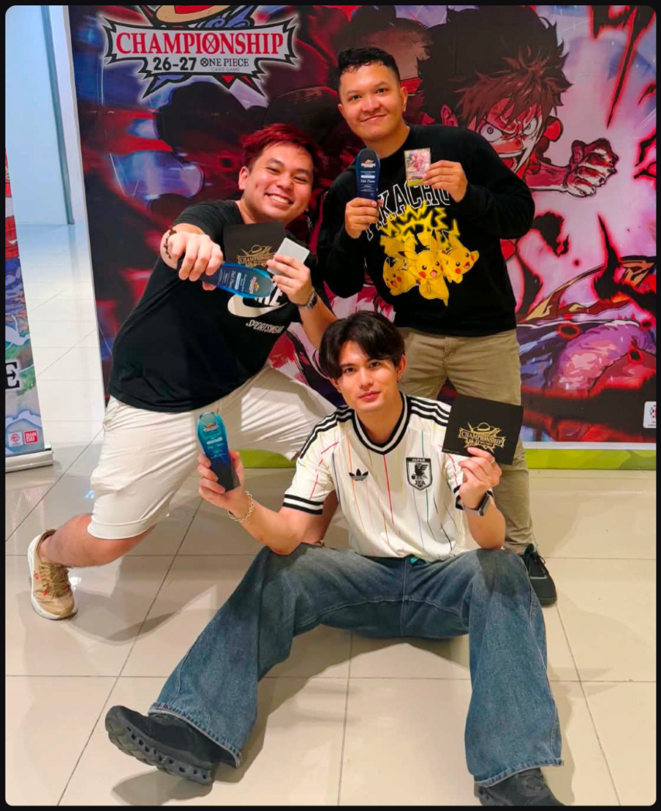
Trascrizione dell'immagine
What You Will Learn in this Guide
This is the Ultimate Guide to Green Mihawk in OP17, a meta where he is seen as the number one contender for the format's BDIF title. The early phase of this meta is a format where you either play Mihawk or play a deck that can contend against Green Mihawk.
This guide is designed to help you understand and master Green Mihawk in the OP17 meta: every card you should consider in deckbuilding, the gameplay concepts and fundamentals you need to master, and matchup strategies for the meta and the field.
In this guide, you will learn:
- Building the DeckWhy each card earns its slot, from the 10C Shanks combo core to the consistency package and tech options, the deckbuilding costs each choice comes with, and sample builds to start from.
- Playing Every PhaseHow to sequence your early searches, win the mid game board battle with the 6+5 play, and recognize when the Shanks Decken Luna combo is the right late game play, and when it isn't.
- Beating the Meta and the FieldTurn order, mulligans, and step-by-step game plans for the Mihawk Mirror and the top decks of OP17, plus the matchups you'll run into from the field.
Main Section — Deck Core and Deckbuilding Fundamentals
🗂 Carte citate nel capitolo indice del trascrittore
| ID | Nome | Note |
|---|---|---|
| OP14-020 | Dracule Mihawk (Leader) | "Green Mihawk", soggetto della guida |
| OP17-022 | Shanks | "10C Shanks", cuore del combo core |
| OP06-033 | Vander Decken IX | "Decken" nella combo Shanks Decken Luna |
| OP08-036 | Electrical Luna | "Luna" nella combo Shanks Decken Luna |
| — | 6+5 | Gioco da 6 costi + 5 costi (non una singola carta) |
| — | Green Bonney | Citato solo come altra gameplay bible dell'autore |
| — | Blue Green Luffy | Citato solo come altra gameplay bible dell'autore |
Deck Core and Deckbuilding Fundamentals
Trascrizione verbatim dalla guida di Raphterra.
Deck Core and Deckbuilding Fundamentals
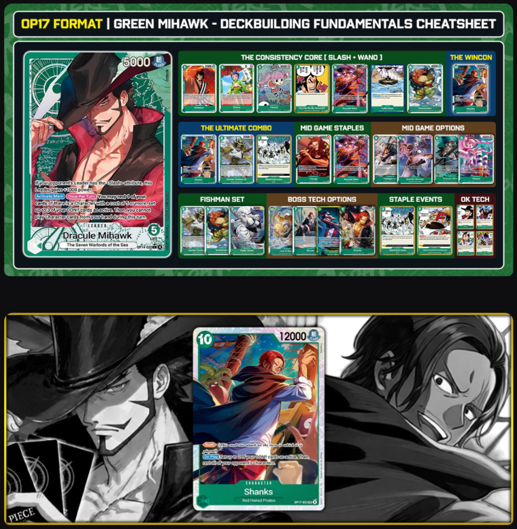
Trascrizione dell'immagine
The New Boss in Town
OP17 is the strongest Mihawk has been yet, mainly due to the addition of one of the strongest cards printed in the game: a 10C Boss with the Slash attribute, 10C Shanks (OP17-022).
 Shanks
Shanks OP17-022 — 10 cost, 12000 power, attributo {Slash}, CHARACTER, "The Four Emperors/Red-Haired Pirates". Testo della carta: Rush (This card can attack on the turn in which it is played.) / On Play Set up to 2 of your DON!! cards as active. Then, rest all of your opponent's Characters.
The deck is now built around 10C Shanks. He has a 12k statline and the Rush keyword, combined with one of the most powerful On Play effects in the game: resting all of your opponent's characters.
This game showcases the power of 10C Shanks's rush keyword combined with a 12k statline!
The Combo Techs: 3C Electrical Luna & 2C Vander Decken
These are the two main synergy tech cards added to Green Mihawk to make the most of 10C Shanks' effect.
 Electrical Luna
Electrical Luna OP08-036 — 3 cost, EVENT, Minks. Testo della carta: Main All of your opponent's rested characters with a cost of 7 or less do not become active during your opponent's next refresh phase. / Trigger Rest up to one of your opponent's characters.
3C Electrical Luna (OP08-036)
- The Obvious Follow-UpIf you can rest the opponent's whole board, why not keep them frozen so they can't attack the following turn?
- Who It HitsThere are multiple decks in OP17 that Electrical Luna hits hard, such as Blue Rocks, Yellow Big Mom Pirates decks, and most importantly the Green Mihawk Mirror.
- The Tempo PayoffDeveloping a 12k Rush character while rendering most (if not all) of your opponent's board frozen is a game-ending tempo play if the opponent does not have an answer for it.
- Out of Range TargetsFor any characters outside of 3C Electrical Luna's range (8C or higher), your Rush 10C Shanks can attack for 12k to 14k power into them to take them out.
 Vander Decken IX
Vander Decken IX OP06-033 — 2 cost, 2000 power, attributo {Ranged}, CHARACTER, Fishman/Flying Pirates, COUNTER +1000. Testo della carta: On Play You may trash a <Fishman> type card from your hand or trash a "Noa's Ark" from your hand or field: K.O. up to one of your opponent's rested characters.
2C Vander Decken (OP06-033)
- The Exact DON!! Match10C Shanks restands 2 DON!! when he is played, exactly the amount of DON!! you need to play 2C Vander Decken.
- Unconditional Removal2C Vander Decken's On Play KOs ANY rested character, no matter what its stats are, at the cost of discarding 1 Fishman card from hand.
- The Fishman TaxThis requirement adds a deckbuilding cost to running 2C Vander Decken, but Mihawk builds can easily afford it (more on this later).
- Key TargetsThe most relevant KO targets in the OP17 meta include bosses like 10C Shanks in the mirror, 10C Rocks and 7C Shiki in Blue Rocks, and 10C Linlin in
Purple Yellow Robin.
The Full Combo: 10C Shanks, 2C Vander Decken, 3C Electrical Luna
- Play 10C Shanks to rest the whole board and restand 2 DON!!.
- Play 2C Vander Decken to KO their biggest threat.
- Use Green Mihawk's Leader ability to rest a card (this can be 2C Vander Decken himself) to restand 3 DON!!.
- Play 3C Electrical Luna to freeze all 7C or lower characters.
- From there, your 10C Shanks Rush body can still attack either into another rested body or into the opponent's Leader to start setting up lethal.
The Consistency Core: Slash and Wano Package
The Green Zoro starter deck released in OP16.5 brought Green two gamechanging Slash cards: 1C Kinemon and 5C Oden.
 Kin'emon
Kin'emon ST32-001 — 1 cost, 2000 power, attributo {Slash}, CHARACTER, "Land of Wano / The Akazaya Nine", COUNTER +1000. Testo della carta: On Play You may rest 1 of your (Slash) attribute Leaders or DON!! cards: Draw 2 cards and trash 1 cards for your hand.
1C Kinemon (ST32-001)
An early game, low-cost Slash draw and filter card for Green. Slash Leaders can use it for 1 DON!! in the early turns, when the Leader doesn't need to attack yet.
- Dig and FixA useful tool for digging through the deck while filtering the hand of unneeded bricks. In a deck like Green Mihawk, where we usually run 10+ counterless cards, having Kinemon is a godsend for fixing bad early hands.
- Unsearchable CardsHe is also useful for digging the deck for cards that cannot be searched by the deck's searchers.
 Kouzuki Oden
Kouzuki Oden ST32-002 — 5 cost, 6000 power, attributo {Slash}, CHARACTER, "Land of Wano/Kouzuki Clan", COUNTER +1000. Testo della carta: On Play Draw 1 card. Up to 1 of your opponent's Characters with an original cost of 6 or less cannot be rested until the end of your opponent's next End Phase.
5C Oden (ST32-002)
One of the best value cards in the game: a 5C Slash 6k body with a counter that, On Play, draws a card and freezes an opponent's character with 6 base cost or less.
- The Saved CounterIn Green Mihawk, this develops a 6k body that enables our Leader ability, then replaces itself in hand with its On Play draw. It effectively saves you a counter card too, because it stops an opposing character from attacking for a turn.
- The Base Cost ClauseOden targets any character with 6 BASE cost, so even characters like 6C Enel or 6C Loki, who increase their cost once played, can be stunned by 5C Oden.
 Perona
Perona OP12-034 — 1 cost, 2000 power, attributo {Special}, CHARACTER, "Muggy Kingdom/Thriller Bark Pirates", COUNTER +1000. Testo della carta: On Play If your Leader has the <Slash> attribute, look at the top 5 cards of your deck and reveal up to 1 <Slash> attribute card or up to 1 green Event card and put it in your hand. Then, place the rest on the bottom of your deck in any order.
1C Perona (OP12-034)
 Otama
Otama OP07-022 — 1 cost, 0 power, attributo {Special}, CHARACTER, "Land of Wano", COUNTER +2000. Testo della carta: On Play Look at the top 5 cards of your deck, reveal up to one green {Land of Wano} type card other than [Otama] and put it into your hand. Then, place the rest of the cards on the bottom of your deck in any order.
1C Otama (OP07-022)
Green's 1C Wano searcher. Since 1C Kinemon and 5C Oden both have the Wano subtype, it only makes sense to include a Wano searcher, as long as we have enough Wano cards worth including in the deck.
 You Can Be My Samurai!!!
You Can Be My Samurai!!! OP01-055 — 1 cost, EVENT, "Wano Country / Kozuki Family". Testo della carta: Main You may rest 2 of your Characters: Draw 2 cards.
1C You Can Be My Samurai (OP01-055)
- One Piece TCG's Pot of GreedThis is essentially a +1 to hand size, but it comes at the steep cost of resting two of your own characters, which can mean sacrificing attackers.
- Minimizing the CostThankfully, Green Mihawk has the tools to minimize this cost:
- The 1 DON!! cost is easy to fit in our curve, because our Leader ability grants us 3 extra DON!! every turn.
- With 1C Kinemon, 1C Perona, and 1C Otama as cheap searchers, resting two characters to activate 1C You Can Be My Samurai is easy, as we often play multiple searchers in the early game that won't be needed for attacks.
- The Hand Size SnowballResolving multiple copies of 1C You Can Be My Samurai in a game can lead to easy wins through raw hand size advantage.
 Kawamatsu
Kawamatsu OP12-023 — 5 cost, 6000 power, attributo {Slash}, CHARACTER, "Fish-Man/Land of Wano/The Akazaya Nine", COUNTER +2000. Nessun testo di effetto sulla carta.
5C Kawamatsu (OP12-023)
- Here for the Typing: 5C Kawamatsu is a vanilla 5C 6k power 2k counter card, but he's not really here for his main text. He's here for his types and attributes.
- The Triple FitBeing Slash type means he's searchable by 1C Perona. Being Wano type means he's searchable by 1C Otama. Most importantly, he has the Fishman subtype, so you can use him as discard fodder for 2C Vander Decken's On Play requirement.
- The Bottom LineThis makes 5C Kawamatsu the perfect 2k counter for the deck, as he fulfills three of the deck's needed subtypes and attributes.
 Coffin Boat
Coffin Boat OP14-039 — 1 cost, STAGE, "East Blue/The Seven Warlords of the Sea". Testo della carta: On Play If your Leader is [Dracule Mihawk], draw 1 card. / End of Your Turn If your Leader is [Dracule Mihawk], set up to 1 of your DON!! cards as active.
1C Coffin Boat (OP14-039)
Of course, Green Mihawk wouldn't be complete without his dedicated stage!
- Draw and Enable1C Coffin Boat thins the deck with its On Play draw 1 effect, and ensures you always have a stage card to target with your Leader ability when resting characters isn't ideal for your turn.
These consistency package cards give Mihawk a lot of searching and draw, giving you fairly consistent access to your mid to late game curve and utility events. Sometimes the raw draw power can overwhelm opposing decks that don't generate as much card value.
This game shows how raw card advantage can carry a deck, even when running weird cards! (P.S. do not run 9C Zoro!)
MidThe Mid Game Army
Green Mihawk shines in its go-wide capability with mid game 6k statline characters, and Green has multiple 5-cost options we can slot in depending on what you are looking to tech against.
5C Oden - Already covered in the prior section. He has the best card value among the 5-costs and fits the deck's searchers by being both Wano and Slash type.

OP17-0315C Yasopp (OP17-031)
The latest 5C powerhouse from OP17, a card that does a little bit of everything!
- Draw Plus RestA 5C 6k body that draws a card On Play (replacing itself in hand while developing a 6k body), then rests an opposing character with cost 8 or less, a very wide range of targets.
- Setup for RemovalThis means you can attack into those characters, or set up targets for 2C Vander Decken or 3C Electrical Luna.
- The Self-RestandAside from his On Play, he also has an end of turn effect that restands a Red-Haired type character, including Yasopp himself. He can attack and keep restanding himself, keeping himself safe from your opponent's attacks.
- Late Game Shanks SupportHe can also restand 10C Shanks in the late game to keep your boss safe from big power-reduction cards.

OP14-0335C Perona (OP14-033)
Mihawk's classic tempo 5-cost since she was released.
- Indirect Card DrawWhile she doesn't have an On Play draw like Oden and Yasopp, stunning up to 2 characters On Play effectively saves you 2 counter cards you would have used for defending. She provides card draw, just indirectly.
- The Sticky BodyHer On KO effect gives her staying power on board, which is relevant in matchups that aim to control the board, like the Green Mihawk Mirror and Purple Enel.

OP07-0265C Freeze Bonney (OP07-026)
Green's timeless curve disruption tech card. She often takes up tech slots in metas with key on-curve plays to stop.

OP13-0316C Law & 6C Mihawk
These are our Slash mid game go-wide enablers. They have great synergy in Green Mihawk because we already run a variety of 5C characters with strong On Play effects, usually stopping attacks from opponents and generating card value.
- The Bridge to Late GameIf we can generate card value by stopping attackers while also developing bodies on board, we get strong mid game turns as we bridge toward the late game.
- The 6+5 Play PatternThe combination of 6C Mihawk or 6C Law with our 5-costs is commonly referred to as the 6+5 play pattern, the most common play the deck makes on its 6 to 9 DON!! turns.

OP06-0357C Hody Jones (OP06-035)
7C Hody Jones is used as a surprise late game finisher or as a mid game control tool.
- Fishman FodderHe is counterless, but being a Fishman card, he can be used as discard fodder for 2C Vander Decken.
- The Life Cost DrawbackHis biggest drawback is that you take a life card when you play him. That can be quite costly in the modern game, where taking life cards in Green is a very high-risk play unless you're going for a game-ending play.
This one shows both the strength and weakness of Hody Jones. Excellent as a late game closer, but very risky to use in the mid-game.
Alternate Boss Cards
10C Shanks is a strong boss card, but having more options is always nice, for the games where you don't draw 10C Shanks, or just to make your late game plays less predictable, since most players will expect 10C Shanks on the 10 DON!! turns.

ST24-00410C Law Bepo (ST24-004)
10C Shanks may have dethroned 10C Law Bepo as Green Mihawk's go-to boss card, but 10C Law Bepo is as reliable as ever as a secondary option.
- Offense vs. Control10C Shanks is mostly an offensive card by itself and requires other cards to establish defense and control (3C Electrical Luna and 2C Vander
Decken). 10C Law Bepo lacks 10C Shanks' immediate offensive impact, but he is a single-card control and defensive play with his freeze and lock effect and his Leader buff effect.
- The Stall TurnHe is useful in spots where you need to stall before getting lethal, buying you one more turn so you can finish the game with 10C Shanks on the following turn.
The Mirror Problem for Classic Bosses
Sadly, aside from 10C Law Bepo, the rest of the classic Slash boss cards are difficult to justify in OP17, given how prevalent the Green Mihawk Mirror is in the meta.
7C Shanks and 9C Mihawk
- Free Decken TargetsThese boss cards often rest themselves on the turn they're played to establish some sort of control. That is bad news in the Green Mihawk Mirror, because they become free targets for 2C Vander Decken, causing a big tempo loss since you used your entire turn to play them out.
- Go 6+5 InsteadMost of the time, it's just better to go 6+5 on the turns where 7C Shanks and 9C Mihawk used to be played.
- Just Leave-Them-Active?Someone may argue that you can play 7C Shanks or 9C Mihawk and leave them active so they won't immediately become free targets for 2C Vander Decken. However, 5C Yasopp can just rest 7C Shanks to make him a rested target, and 9C Mihawk staying active means you spent 9 DON!! without establishing any control on board.
9C Shanks
This one shows how 10C Law Bepo is still a very good card, and also how 7C Shanks is hard to justify in the current meta.
Event Techs
Green Mihawk's Leader ability gives him 3 extra DON!! every turn that can be used to play events, so a Mihawk list wouldn't be complete without our event options, and we have quite a lot of options in OP17!
Event Staples

OP06-038Preference Techs
The following tech cards are mostly based on preference or on which decks you are trying to tech against, and Green has a wide variety of tech events in this regard!
All of the following options have On Play effects if you want to use them on your turn, but can also be used as a 3k counter for your Leader if you don't need their On Play effect.

OP14-0371C For Fun (OP14-037)
A cheap KO event that KOs any rested character with 7k base power or less, and you can even rest your 1C characters, leader, or stage to pay its cost.

OP14-0381C Trash Event (OP14-038)
A rest event you can use to implement the starve gameplan from the get-go, resting early to mid game characters from Elbaf Aggro and Purple Yellow Robin.

OP13-0401C All Out (OP13-040)
A weaker version of 3C Electrical Luna, but it comes with the safety option of being usable as a 3k counter for defense.

OP12-0371C Dead Man's Game (OP12-037)
It used to be the staple lethal enabler event for Green Mihawk, but in OP17 it has seen less play because 10C Shanks can rest blockers and fill the role of 1C Dead Man's Game.
Deckbuilding Requirements and Decision Points
Before we proceed to the sample builds, let's review some deckbuilding requirements and deckbuilding costs for Green Mihawk in OP17.
The Deckbuilding Costs
- 6C Law Needs 1C CharactersDecks that run 6C Law must run a good number of low-cost characters as bounce targets: 1C Perona, 1C Kinemon, and 1C Otama,
running 4 of each.
- 6C Mihawk Needs PeronaDecks that run 6C Mihawk must run 5C Perona to have more play targets alongside 5C Oden, usually a minimum of 3 copies of Perona alongside 4 copies of Oden.
- 1C Otama Needs Wano1C Otama needs enough non-Otama Wano targets to minimize the chance of her search whiffing, usually a minimum of 14 non-Otama Wano cards.
- 2C Vander Decken Needs FishmenYou need enough Fishman cards to serve as fodder for Decken's discard, usually a minimum of 7 copies including Vander Decken himself.
- Rest Events Need 1C Coffin BoatIf you are running 1C For Fun or 1C Trash Event, you ideally need 3 copies of Coffin Boat, so you have an easier time paying these events' rest requirement without resting your DON!! or key characters.
6C Law vs. 6C Mihawk
6C Law and 6C Mihawk both have pros and cons.
6C Law
- Hand NeutralHe replaces himself in hand when played due to his On Play bounce effect, and lets you recur searchers to secure your late game.
- Any 5-CostHe can play any 5-cost character from hand, which allows you to run non-Slash characters like 5C Freeze Bonney and 5C Yasopp, and lets you spam disruption effects like 5C Perona and 5C Bonney.
- Late Game BlockerHe becomes a blocker you can hide behind in the late game, letting you run fortress (or "turtle") strategies while setting up lethal.
- Bounce Target DrawbackHis main downside is that he requires a character on board to bounce. If you have a bad early game with no early characters, or if your opponent actively clears your weenies, you may be locked out of playing him, and he can be a dead card in hand until you draw into a searcher.
- The Rested Play DrawbackHe plays the other character rested, leaving that character vulnerable to attacks.
- The Safer OptionHe's generally the safer option due to the hand advantage he provides and his defensive utility in the late game.
6C Mihawk
- The 7k Statline: His 7k statline is very significant for attacking, for staying safe from Purple Enel's power-based removal, and for being harder to attack into in board control matchups.
- The Active PlayHe plays the other character active, so it is not vulnerable to attacks on the opponent's turn. This makes him more likely to stick on board, especially against removal-based decks like Purple Enel or board control-centric matchups like the Green Mihawk Mirror.
- No Setup NeededHe doesn't need any early game setup to activate his On Play effect, so he is less vulnerable to opponents clearing your weenies. Even with a bad early game, you can go online in the mid game as long as you have 6C Mihawk alongside a 5-cost.
- The On Attack FilterHe also has an On Attack filter effect to dig through the deck and discard unwanted bricks.
- The Drawbacks vs. 6C Law:
- He does not replace himself in hand when played.
- He is limited to playing Slash and Perona characters (5C Oden and 5C Perona), so he can't play generic 5-costs like 5C Yasopp and 5C Freeze Bonney.
- He has low defensive utility and can be bad to play in the late game.
5C Freeze Bonney vs. 5C Perona
Most players agree that 5C Oden and 5C Yasopp are staples for the deck because they replace themselves upon play in addition to their board control effects. The difference is usually which extra 5-costs to play, and it's usually a choice between 5C Freeze Bonney and 5C Perona.
- The Case for Bonney5C Freeze Bonney is more popular, because she can freeze the 10 DON!! turn and delay Yellow's 10C Linlin and Green's 10C Shanks. She can also be great in the mid game when you lose the dice and go first, stopping 6 DON!! plays like 6C Law in the Green Mihawk Mirror and 6C Marco against Red
Ace.
- The Case for Perona5C Perona stops two attackers On Play and has an On KO effect that makes her more sticky. She can be very good against Elbaf Aggro, the Mihawk Mirror, and Purple Enel.
Sample Deck Builds
Sample Deck 1 - Standard 6C Law
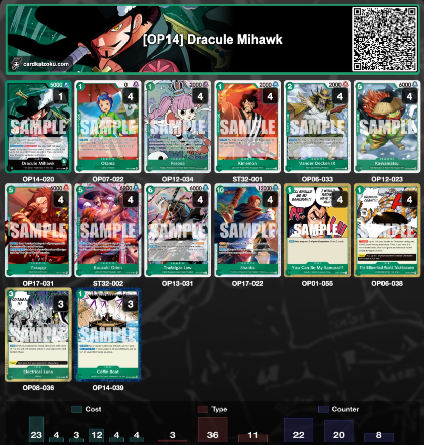
Trascrizione dell'immagine
| Qty | Card | ID | Cost | Power |
|---|---|---|---|---|
| 1 (Leader) | Dracule Mihawk | OP14-020 | — | 5000 |
| 4 | Otama | OP07-022 | 1 | 0 |
| 4 | Perona | OP12-034 | 1 | 2000 |
| 4 | Kin'emon | ST32-001 | 1 | 2000 |
| 4 | Vander Decken IX | OP06-033 | 2 | 2000 |
| 4 | Kawamatsu | OP12-023 | 5 | 6000 |
| 4 | Yasopp | OP17-031 | 5 | 6000 |
| 4 | Kouzuki Oden | ST32-002 | 5 | 6000 |
| 4 | Trafalgar Law | OP13-031 | 6 | 6000 |
| 4 | Shanks | OP17-022 | 10 | 12000 |
| 4 | You Can Be My Samurai!! | OP01-055 | 1 | Event |
| 4 | The Billion-fold World Trichilocosm | OP06-038 | 1 | Event |
| 3 | Electrical Luna | OP08-036 | 3 | Event |
| 3 | Coffin Boat | OP14-039 | 1 | Stage |
▦ deck statistics bar chart
This is a good starting point for the deck. It goes for maximum consistency in getting the Shanks Decken combo for the late game, and it's good for familiarizing yourself with how the deck plays. I suggest using this as your starting point, then changing the deck based on your preference.
Sample Deck 2 - Standard 6C Law + Techs
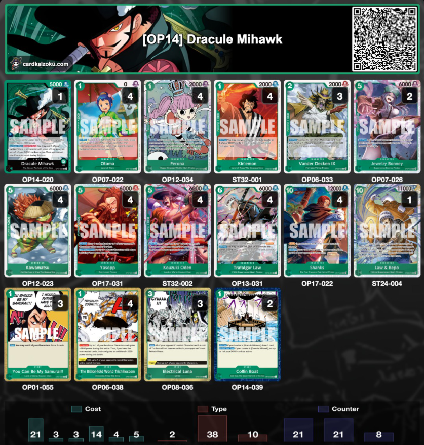
Trascrizione dell'immagine
| Qty | Card | ID | Cost | Power |
|---|---|---|---|---|
| 1 (Leader) | Dracule Mihawk | OP14-020 | — | 5000 |
| 4 | Otama | OP07-022 | 1 | 0 |
| 4 | Perona | OP12-034 | 1 | 2000 |
| 4 | Kin'emon | ST32-001 | 1 | 2000 |
| 3 | Vander Decken IX | OP06-033 | 2 | 2000 |
| 2 | Jewelry Bonney | OP07-026 | 5 | 6000 |
| 4 | Kawamatsu | OP12-023 | 5 | 6000 |
| 4 | Yasopp | OP17-031 | 5 | 6000 |
| 4 | Kouzuki Oden | ST32-002 | 5 | 6000 |
| 4 | Trafalgar Law | OP13-031 | 6 | 6000 |
| 4 | Shanks | OP17-022 | 10 | 12000 |
| 1 | Law & Bepo | ST24-004 | 10 | 11000 |
| 3 | You Can Be My Samurai!! | OP01-055 | 1 | Event |
| 4 | The Billion-fold World Trichilocosm | OP06-038 | 1 | Event |
| 3 | Electrical Luna | OP08-036 | 3 | Event |
| 2 | Coffin Boat | OP14-039 | 1 | Stage |
▦ deck statistics bar chart
This is the modified version of the list above, teched harder for the mirror. It includes 5C Freeze Bonney to freeze the DON!! and 10C Law Bepo for the turns where you don't have 2C Decken to take out 10C Shanks.
Sample Deck 3: Hybrid 6C Law + 6C Mihawk (My Most Preferred)
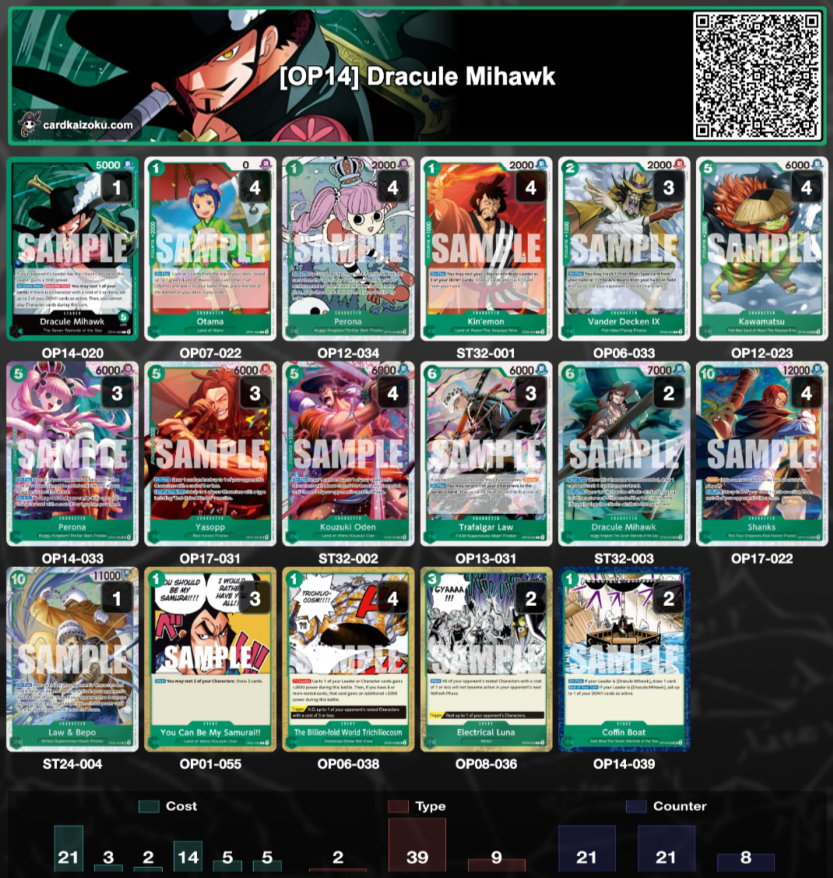
Trascrizione dell'immagine
| Qty | Card | ID | Cost | Power |
|---|---|---|---|---|
| 1 (Leader) | Dracule Mihawk | OP14-020 | — | 5000 |
| 4 | Otama | OP07-022 | 1 | 0 |
| 4 | Perona | OP12-034 | 1 | 2000 |
| 4 | Kin'emon | ST32-001 | 1 | 2000 |
| 3 | Vander Decken IX | OP06-033 | 2 | 2000 |
| 4 | Kawamatsu | OP12-023 | 5 | 6000 |
| 3 | Perona | OP14-033 | 5 | 6000 |
| 3 | Yasopp | OP17-031 | 5 | 6000 |
| 4 | Kouzuki Oden | ST32-002 | 5 | 6000 |
| 3 | Trafalgar Law | OP13-031 | 6 | 6000 |
| 2 | Dracule Mihawk | ST32-003 | 6 | 7000 |
| 4 | Shanks | OP17-022 | 10 | 12000 |
| 1 | Law & Bepo | ST24-004 | 10 | 11000 |
| 3 | You Can Be My Samurai!! | OP01-055 | 1 | Event |
| 4 | The Billion-fold World Trichilocosm | OP06-038 | 1 | Event |
| 2 | Electrical Luna | OP08-036 | 3 | Event |
| 2 | Coffin Boat | OP14-039 | 1 | Stage |
▦ deck statistics bar chart
This is a sample Hybrid list with 6C Mihawk and 6C Law, and it is my most preferred variant of Green Mihawk because it has a backup plan in case the early game doesn't go well, like when I don't draw any early searchers or my opponent clears my weenie board.
From my testing, this variant is the most consistent one, and the one I feel confident enough to bring to a big event, because there is less chance that a bad opener automatically leads to a loss.
Sample Deck 4: Trash Mihawk Build
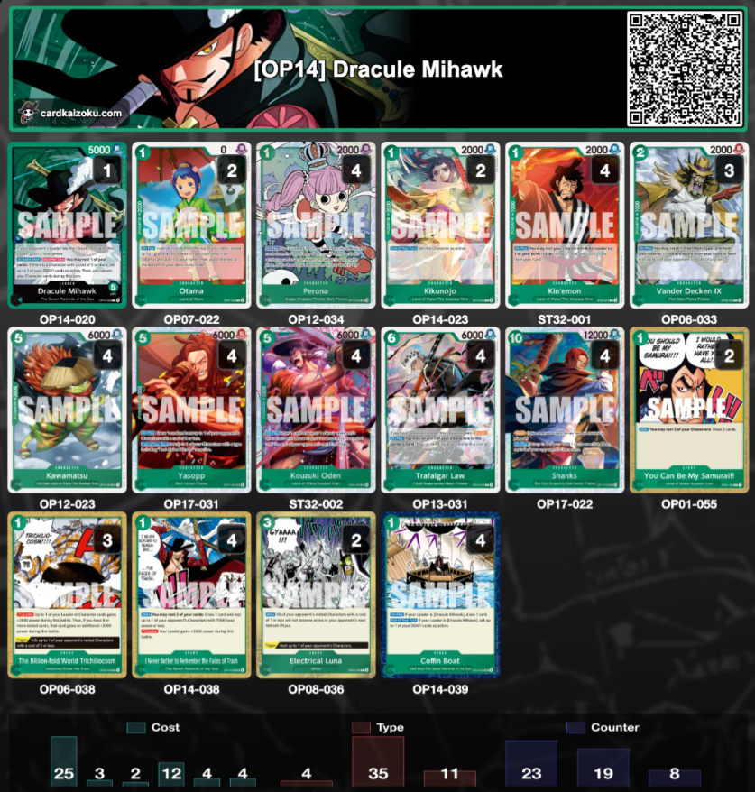
Trascrizione dell'immagine
| Qty | Card | ID | Cost | Power |
|---|---|---|---|---|
| 1 (Leader) | Dracule Mihawk | OP14-020 | — | 5000 |
| 2 | Otama | OP07-022 | 1 | 0 |
| 4 | Perona | OP12-034 | 1 | 2000 |
| 2 | Kikunojo | OP14-023 | 1 | 2000 |
| 4 | Kin'emon | ST32-001 | 1 | 2000 |
| 3 | Vander Decken IX | OP06-033 | 2 | 2000 |
| 4 | Kawamatsu | OP12-023 | 5 | 6000 |
| 4 | Yasopp | OP17-031 | 5 | 6000 |
| 4 | Kouzuki Oden | ST32-002 | 5 | 6000 |
| 4 | Trafalgar Law | OP13-031 | 6 | 6000 |
| 4 | Shanks | OP17-022 | 10 | 12000 |
| 2 | You Can Be My Samurai!! | OP01-055 | 1 | Event |
| 3 | The Billion-fold World Trichilocosm | OP06-038 | 1 | Event |
| 4 | I Never Bother to Remember the Faces of Trash | OP14-038 | 1 | Event |
| 2 | Electrical Luna | OP08-036 | 3 | Event |
| 4 | Coffin Boat | OP14-039 | 1 | Stage |
▦ deck statistics bar chart
This is the recent variant that gained popularity in the West, using four copies of 1C Trash Event for better board control and to improve the matchups against PY Robin and Elbaf Aggro.
I like this variant from testing too, but I still prefer the Hybrid Law + Mihawk variant for its mid game consistency. Perhaps a combination of the two variants will work, but I need to do more testing!
Quick Tech Cheatsheet Against The Meta
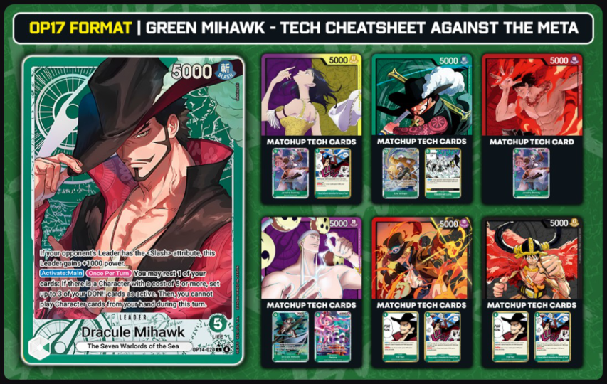
Trascrizione dell'immagine
Here is a quick tech-card cheatsheet that you can use as reference when preparing your decklist for your events!
- Green Mihawk Mirror10C Law Bepo, 3C Electrical Luna, 5C Bonney
- Purple Yellow Robin: 1C Trash Event, 5C Bonney
- Red Ace: 5C Bonney
- Purple Enel: 6C Mihawk, 5C Perona
- Elbaf Aggro1C For Fun, 1C Trash Event
Final Note on Deck Builds - The Core Carries
Ultimately, most of the core cards stay the same across lists, and the core is strong enough to bring you success as long as you play well!
Main Section Gameplay Fundamentals
Gameplay Fundamentals
Trascrizione verbatim dalla guida di Raphterra.
 Searching & Playing 6C Law vs 6C Mihawk:Late Game (10 DON!!+)Other Card Combos & UsageNever Give Up!Final Tip: Assess the Misplay!
Searching & Playing 6C Law vs 6C Mihawk:Late Game (10 DON!!+)Other Card Combos & UsageNever Give Up!Final Tip: Assess the Misplay!Gameplay Fundamentals
Turn Order and Mulligans
TurnoTurn Order Go Second
Most decks want to go second to reach their own power turn or to deny the opponent's.
If you're uncertain about a matchup, take second if you win the dice roll. Reaching your 10C Shanks turn as soon as possible is never bad.
MulliganGeneral Mulligan
Your ideal hand has 1C Perona and 1C Kinemon. This opener lets you search and draw for cards to fill your curve, and it sets up future plays such as 1C You Can Be My Samurai or 6C Law.
General Gameplan
In this section, I list the common decisions and plays you make in each phase of the game, along with the concepts related to those decisions and plays.
Early Game (1 to 4 DON!!)
In the early game, you should generally be searching and drawing for your mid game curve.
EarlyEarly Searching and Drawing: The 1-Cost Priority Order
When deciding which card to play first among Kinemon, Perona, Coffin Boat, and Otama:
1C Kinemon (First Priority)
- The Leader Rest WindowThis is usually the first character you should prioritize playing, especially on the turn when your Leader cannot attack yet, since you can rest your Leader to activate Kinemon's On Play draw and filter.
- Discarding With KinemonDiscard extra bricks (Law, Shanks, You Can Be My Samurai). Discard cards that will only be used in the late game and that you are likely to draw more copies of, e.g. 10C Shanks when you're going first, since it will be a long time before you can play it and you're likely to draw more copies.
- Keep The CombosIf you are faced with a hand that looks like all are great cards to keep, keep cards that are critical for your combo turns e.g. Decken + Kawamatsu, 6C Mihawk + 5C Perona.
1C Perona (Second Priority)
- Information FirstShe comes second after 1C Kinemon, because you have more information on which card to pick with Perona after you have already drawn cards with 1C Kinemon.
- The Early Search LadderIn the early game, you want to make sure you have a 5-cost to play, so search for 5C Oden if you don't have a 5-cost yet. If you already have a 5-cost, you want a 6-cost go-wide enabler, 6C Law or 6C Mihawk. If you already have both, you can start looking for late game cards (10C Shanks), utility events (3C Electrical Luna), or combo pieces (Fishman 5C Kawamatsu).
1C Coffin Boat (Third Priority)
- Play It Later, Characters firstCoffin Boat is the next priority card. I prioritize it after Kinemon and Perona, because we can usually play Coffin Boat from our 5 DON!! turns onwards, since we get extra DON!! from our Leader.**** In the early turns, I'd rather use my DON!! on characters, since it's very easy to play 1C Coffin Boat later with DON!! from our Leader ability.
.**** dopo "from our Leader." — probabile residuo di formattazione markdown non renderizzato dalla fonte.1C Otama (Last Resort)
- The Whifftama Problem: Ahhh, Otama Otama, also known in the community
as "Whifftama", since she is the searcher most likely to miss a search in the deck, which usually has only 12 to 16 search targets for Otama.
- Last Resort RuleOnly play her as a last resort, if you don't have any other 1C characters to play. If you don't need to play Otama, DO NOT play her!
- Whiff CostMissing a search and losing a 2k counter in hand can hurt a lot, since our other 2k counter, 5C Kawamatsu, is usually reserved as discard fodder for 2C Vander Decken.
- Hand FixerThat being said, 1C Otama can be very clutch in fixing bad hands, since she can search 1C Kinemon or 1C You Can Be My Samurai for chain draw, and she can also search 5C Oden for a 5C Wano Slash character.
You Can Be My Samurai Usage and 6C Law Setup
You Can Be My Samurai can snowball hard if you can cast multiple copies throughout the game! However, be careful not to cast it carelessly in the early game.
Starving With Kinemon or 1C Trash Event
Against some decks, you may want to implement a full or semi starve gameplan, meaning you don't hit their Leader so you don't give them hand cards, and instead direct most of your attacks at clearing the board.
Spare DON!! in the Early Game
The No 1-Cost Opener
Mid Game (5 to 9 DON!!)
Assembling the Combo
One of your goals in the mid game is to assemble and set up your combo pieces for the late game: 10C Shanks, 3C Electrical Luna, and 2C Vander Decken plus fish food (either 5C Kawamatsu or more copies of 2C Vander Decken).
Which 5C to Play First on Your 5 to 6 DON!! Turns?
In the mid game, you generally want to go 6+5 (shorthand for a 6-cost plus a 5-cost) on consecutive turns, with the 6-cost being 6C Law or 6C Mihawk and the 5-cost being one whose On Play gives some sort of value (stun, freeze, draw). Thankfully, we have a lot of options here!
Most of our 5-costs are strong, and with multiple copies in hand, you need to decide which one to play first. Here are some guidelines:
- 5C Yasopp (The Safe Opener)5C Yasopp is often the safe character to play first, since you can rest and attack any character your opponent played.
- Self-RestandYou can use your Leader ability to rest him, and he still restands himself at end of turn to stay safe from attacks. For the same reason, you can play him off 6C Law without fear of him getting attacked.
- 5C Oden (Save for 6 DON!!)I usually save 5C Oden for 6 DON!! onwards, since at 5 DON!! there's usually no character worth freezing with his On Play yet. He's usually better saved for when there are 5C+ characters on board to stun.
- 5C Perona (The Removal and Aggro Pick)Against removal and board control matchups, 5C Perona is the best card to play first, since her On KO effect makes her very sticky. If the opponent tries to remove her, you can play 5C Oden or 5C Yasopp off her On KO effect to still stick a body on board while remaining hand neutral.
- The Perona Aggro LoopAgainst aggro decks, she's also great to play early to stop early aggression. On the following turns, you can bounce and replay her with 6C Law to keep stunning 2 characters every single turn.
- 5C Bonney (The Curve Steal)When going first and losing the dice against specific matchups like Green Mihawk and Red Ace, 5C Bonney can put the curve back in your favor by locking out 6-cost power plays (6C Law for Mihawk, 6C Jozu for Ace).
- The Bottom Line5C Yasopp is generally the best one to play first, since he restands himself at every end of turn and you get to save your stuns for bigger characters later on. 5C Perona is best against removal-based and aggro matchups, and 5C Bonney is best when you lose the dice and want to steal back curve advantage.
This game showcases the raw power of consecutive 6+5 turns! (apologies for the mic fan)
5C Oden's Freeze Targets
5C Oden's value comes from stunnning key mid-game characters. In the OP17 meta, his most valuable targets are:
- Green Mihawk Mirror: 5C Yasopp to force other characters to attack and rest.
- Elbaf Aggro: 6C Loki and 4C Saul. Oden targets base cost, so the Giants' cost increase doesn't affect Oden's freeze range.
- Purple Enel: 6C Enel, for the same base cost reason as the Elbaf Giants. Also 3C Holy if you don't have Yasopp to rest and attack Holy, since freezing it is the next best thing.
- Red AceAny of their 6-costs. Usually 6C Marco is the one they play early, but
sometimes they also use 6C Jozu.
- Purple Kaido: 6C King.
5C Yasopp: Rest & Punish
5C Yasopp is primarily used to rest characters and then attack big into them through your Leader ability. He's very good at this because if you don't have 1C Coffin Boat, you can rest Yasopp himself with the Leader ability and he restands himself at turn end.
5C Perona: Perona Spam
5C Perona can win games on her own with a strategy I call "Perona Spam", which just means playing multiple copies of Perona, or bouncing and replaying her repeatedly with 6C Law.
5C Bonney: The DON!! Freeze
She is primarily used to freeze the opponent's DON!! on key turns, but she can also freeze rested bosses in the late game. Her primary uses in the OP17 meta:
- Green Mihawk MirrorBlock the 6C Law or 6C Mihawk turn, or block the 10C Shanks turn. This is not necessarily on curve; sometimes it's also good to freeze the opponent's 10 DON!! near the end game to stop them from bypassing your blockers.
- The Rested Shanks FreezeIn the mirror, you can also freeze a rested 10C Shanks if you don't have 2C Vander Decken or 10C Law Bepo.
- Red AceBlock the 6C Marco turn, the 8C Newgate turn, or the 10C Newgate turn. It would be great if you can freeze DON!! on consecutive turns, especially if you lost the dice roll.
- Elbaf AggroBlock the 8C Luffy turn. Blocking 6C Loki is not that impactful, because they have alternative plays for that turn with 5C Pirate Docking 6 or 4C Saul.
- Purple Yellow RobinBlock the 10C Linlin turn.
- Blue RocksBlock the 10C Rocks turn or the 6C Newgate turn.
Searching & Playing 6C Law vs 6C Mihawk:
Now that we've covered the 5-costs, let's cover our two mid game go-wide enablers! As I mentioned before, I like having both in the deck so I can adapt to more situations.
Their full pros and cons are in 6C Law vs. 6C Mihawk (Chapter 2). Here, let's discuss which one to prioritize when you have to choose in your searches, or when choosing which one to play from your hand.
- The No-Weenie ExceptionIf your hand has no weenies, you weren't able to set up weenies, your opponent got rid of your weenies, or your opponent's deck can wipe out weenies, 6C Mihawk is the preferred search. You don't need prior setup to play him; just him and a 5-cost in hand give you a decent mid game play.
- 6C Mihawk vs. Purple Enel
- 7k SurvivalHis 7k statline requires Enel to reduce his power before he can be KOd by 2C Gum Gum Lightning.
- Hard-to-CounterA 7k attack without attaching DON!! is also difficult for Enel
to counter without using their combo pieces as counters.
- Anti-Lightning DragonSince he plays the other character active, they can't use 0C Lightning Dragon on it without setting it up.
- Enel Weenie WipeThey can also easily wipe out your weenies before the 6 or 7 DON!! turn, so you can't rely too much on 6C Law.
- 6C Mihawk in the Mirror
- Easier DefenseHis 7k statline makes him easier to defend from opponent's attacks; even an all-in 10k attack on him can be countered with 1C Billion Fold.
- Free 7k CheckAttacking for 7k without any DON!! attached is significant in this matchup, since you can check for 2k counters and see how the opponent reacts before committing any DON!! to play cards.
- Oden MagnetThe opponent is also usually forced to target him with 5C Oden, which may let your own 5C Yasopp attack freely.
- 6C Mihawk vs. Elbaf Luffy and Sabo
- The Loki WipeWhen you are going first, your opponent is very likely to use 6C Loki to wipe out your weenies on their 6 DON!! turn. If you don't have weenies to bounce with 6C Law, search for 6C Mihawk to secure a go-wide play.
- Left side of the screen: the sim's chat/log panel with a "Report Player" button above it. The visible game log reads:
- "[Digijda#5391] Dracule Mihawk [OP14-020]: Rest Perona [OP12-034]"
- "[Digijda#5391] Dracule Mihawk [OP14-020]: Activate 1 Don"
- "[Digijda#5391] Dracule Mihawk [OP14-020]: Activate 1 Don"
- "[Digijda#5391] Dracule Mihawk [OP14-020]: Activate 1 Don"
- "[Digijda#5391] Dracule Mihawk [OP14-020]: Can't play Cost 1 Or More Characters for the Turn!"
- "[Digijda#5391] Dracule Mihawk [OP14-020] attacking Monkey D. Luffy [OP17-079]"
- below it the chat input box ("Enter Chat Message...") with a "Send" button, and a "...ute Chat" toggle at the left.
- at the bottom left, a row of face-up cards (hand/trash preview) with a white arrow pointing right.
- Centre: the play field. The opponent's side is at the top (a row of face-down DON!! cards along the top edge, a row of characters below it, plus a character/leader area on the right and cards marked "SAMPLE"); the player's side is at the bottom (character row, the ONE PIECE CARD GAME leader/deck area with a "STAGE" slot at its right, and a row of green DON!! cards along the bottom edge).
- Overlaid on the board: two red "5000" power callouts joined by a large red arrow that runs from the bottom card up to the top card, showing the attack; a red play button (YouTube) sits in the middle of the arrow.
- Bottom right: the streamer's facecam window (Raphterra), with "CULT LEADER / RAPHTERRA" text behind him.
- Bottom right of the thumbnail: "Guarda su YouTube" and "metafy.gg/@raphterra".
This is a good showcase of the general gameplan of Green Mihawk, from the ideal starting hand to the ideal late game.
When Not to Go 6+5
The 6+5 play is the ideal mid game play, developing two bodies while usually drawing cards and/or stunning the opponent's attackers. However, you don't always need to go 6+5. In some cases, you just want to play one 5-cost and allocate DON!! for other purposes. Let's look at some examples:
- The Secure KillWhen you really need the extra DON!! for attacking to clear a character.
- The Mirror ExampleIf my opponent played a 5C Yasopp I really want to clear, instead of going 6+5 and attacking for 9k (which can be countered by two 2ks), I play Yasopp for 5 DON!! and allocate the extra DON!! to a 10k attack. This secures the kill on Yasopp, so I don't have to worry about it anymore.
- Saving Law for the Bounce LoopIf I only have one 6C Law in hand, I sometimes save it for the following turns to bounce and replay a powerful On Play effect, such as 5C Freeze Bonney when I want to freeze DON!! on consecutive turns, or 5C Perona when I want to keep freezing two characters per turn.
- Avoid Tunnel VisionThese scenarios are quite uncommon, but keep in mind that you don't always need the 6+5 play. Don't get tunnel-visioned by it if there are better plays for the current game state.
Late Game (10 DON!!+)
The Combo Deck Phase
The late game is where you become a combo deck and execute one of the strongest combos in the game: Shanks Decken Luna. The combo develops a 12k Rush character, takes out a rested boss card, and freezes the rest of the board.
[Card image row on green background, three cards side by side:]
Vander Decken IX (ID?) — 2 cost OP06-0332000 powergreen characterFishman/Flying Pirates. Effect text begins "You may return 1 of your <Cost 7 or more> ... hand or 1 hand a 'Vander Decken IX' from your hand or field to ... K.O. up to one of your opponent's leader or character(s)"Electrical Luna (ID?) — 3 cost OP08-036green event"BLZ ZAAAP!!!" artworkMinks. Effect text begins "[Main] All of your opponent's rested characters with a cost of 7 or less do not become active during your opponent's next refresh phase." / "[Trigger] Rest up to one of your opponent's characters."Let's look at some of the alternative plays you can make in the late game.
Partial Combos
These are 10C Shanks plays for scenarios where you don't necessarily need the 4-card combo.
- 10C Shanks + 3C Electrical LunaRemember that you don't always need Vander Decken to remove a character. 10C Shanks is a Rush character that can attack for up to 17k on the turn he's played, so you might not need to spend 2 cards from your hand on the Vander Decken combo; just attack the character you want to remove with 10C Shanks instead.
- Bait, Then PivotTo secure the kill on a big character, bait out counters first by poking smaller attacks at life to force out counters, then pivot your attacks to the board once they go low on hand cards.
- 10C Shanks + DON!! for Board ClearAnother board clear alternative is to attach the 5 DON!! to your characters and attack for a full board clear, if your opponent is low on hand size and you don't have Decken or Luna in hand.
LateStall, Board Setup, and Lethal Setup Plays
You have to recognize scenarios where 10C Shanks is NOT the ideal play, which is actually more common than you'd expect. Here are some of those scenarios:
- No Lethal, No ThreatsYou don't have lethal yet, there are no immediate threats to take out on board, and you only have 1 to 2 copies of 10C Shanks that you need to save in case your opponent plays must-remove characters on the following turn.
- The Full BoardYou have a full board and you don't need the Shanks Decken Luna combo yet, because you would need to play over characters.
- The 3+ Copies ExceptionIn the two scenarios above, if you have 3+ copies of Shanks, it's often better to play Shanks anyway to develop a 12k body on board, since you have more copies in hand.
- Defense First10C Shanks won't end the game yet, and you need to set up defense because the Shanks Decken Luna combo won't save you from your opponent's possible lethal play.
If you encounter these scenarios, analyze whether there are better plays than the Shanks Decken Luna combo. Here are some examples:
10C Law Bepo: The One-Card Combo
Law Bepo does a bit of everything the Shanks Decken Luna combo does. He freezes a character (one-turn removal, similar to Decken), buffs the Leader (weakening a wide board, similar to Luna), and develops an 11k body on board.
LateLate Game 6+5
Another 6+5 is still a strong late game option, especially with 6C Law.
Use the rest of your DON!! for attacking the Leader and setting up lethal, attacking the board to clear it, or even playing events like 3C Electrical Luna for more stall.
This is a very flexible play for defense, offense, or simply developing the board if you want to save your Shanks Decken Luna for a future turn.
The 5+5 Play
If you don't have a 6+5 play, 5+5 is still viable. You don't establish blockers and you have fewer DON!! for attacks, but you can usually still stop multiple attackers:
- 5C Oden + 5C Perona: Stop 3 attackers.
- 5C Oden or 5C Perona + 5C BonneyStop attackers, then freeze DON!! to lock out your opponent's 10 DON!! turn, or just to lock down a rested big body.
- 5C + 7k to 8k SpamWith a wide board of 4 to 5 characters, you can also go super aggressive: allocate 5 DON!! to play a stunner (5C Perona or 5C Oden), then allocate the rest of your DON!! to spam your opponent's Leader with 7k or higher attacks and set up lethal for a 10C Shanks Rush play on the following turn.
These are just examples to keep in mind for your late game plays. Once again, do not get tunnel-visioned into always doing Shanks combo turns in the late game.
LateLate Game Tip: Don't Reveal Your Play Immediately
Remember, your opponent does not see your hand. All they see is how many open DON!! you have left.
Poke with small attacks and see how the opponent reacts. Check for 2k counters, check if they defend their board, check if they take life, then adjust based on what they do. For instance:
- If They Take LifeGo aggressive and use 10C Shanks and your other characters to pressure life and go for, or set up, lethal.
- If They Counter DownIf they go down on hand size countering, pivot to clearing the board.
LateLate Game Lethal: Tips and Tricks
10C Shanks makes our late game lethal turns very strong: we can bypass all blockers, we have a 12k Rush character, and between 10C Shanks' On Play and our Leader ability we get 5 additional DON!! to allocate for the rest of our attacks.
- The Base Pressure10C Shanks and your Leader alone can attack for 10k and 12k.
- Bypassing Without ShanksIf you don't have 10C Shanks, you can use 5C Oden or 5C Yasopp to bypass blockers.
- The Play-Over DON!! TrickIf you have a full board, attach DON!! to a character, attack with it, then play over that character with a 1C character so the DON!! attached to it become rested, and restand them with your Leader ability.
- Disabling Counter Events1C Dead Man's Game and 7C Hody Jones, if you have them in your deck, can rest active DON!! to disable counter events and go for lethal.
- Left: the sim log panel with the "Report Player" button above it. Visible log lines:
- "[zdfsdf#8209] Draw 2 Don"
- "[zdfsdf#8209] Deploy Charlotte Linlin [ST34-004]"
- "[zdfsdf#8209] Charlotte Linlin [ST34-004]: Minus 4 Don"
- "[zdfsdf#8209] Charlotte Linlin [ST34-004]: Trash King [EB04-031]"
- "[zdfsdf#8209] Charlotte Linlin [ST34-004]: Add card to top of Life from Deck"
- "[zdfsdf#8209] Charlotte Linlin [ST34-004]: Set Shanks [OP17-022] Base Power to -12000"
- "[zdfsdf#8209] Kaido [OP17-058] attacking Shanks [OP17-022]"
- beneath it the chat input ("Enter Chat Message...") with the "Send" button and the "...ute Chat" toggle; bottom-left shows two face-up preview cards (one marked SAMPLE) with a white share arrow.
- Centre: the play field. Opponent's side (top, purple-tinted): a row of face-down DON!! along the top edge, their character row, a "STAGE" slot and the ONE PIECE CARD GAME leader/deck area on the right, plus a card area labelled "AREA" / "...ER AREA" on the purple half. Player's side (bottom, green-tinted): a row of characters (several face-up green cards), the ONE PIECE CARD GAME leader/deck area, and a row of green DON!! cards along the bottom edge, with a green DON!! hand icon at the bottom left.
- Overlay: a red "5000" power callout at the top with a long red arrow curving down to a highlighted card on the player's character row (marked with a small circular target icon), showing Kaido attacking Shanks. The red YouTube play button sits in the middle of the arrow.
- Bottom right: the streamer's facecam (Raphterra) with "CULT LEADER / RAPHTERRA" behind him, plus "Guarda su YouTube" and "metafy.gg/@raphterra".
This one showcases the Play-Over Don tick alongside some techs: 1C For Fun, 1C Trash Event.
Other Card Combos & Usage
Card Counting Combos: 1C For Fun and 1C Trash Event
1C For Fun and 1C Trash Event are the cards most commonly misplayed in this deck if you're not counting carefully.
They can rest not only DON!! but any card, including characters, stage, and Leader, to use their On Play ability. Carefully count the cards you need to rest when executing these combos, especially if you plan to use both in a single turn:
- 1C For Fun: Requires 1 DON!! plus 3 other cards to rest (4 cards total).
- 1C Trash Event: Requires 1 DON!! plus 2 other cards to rest (3 cards total).
- The Leader Ability Count: Then remember you need to rest 1 card for your Leader ability.
Note: There may be scenarios where it's worth resting attackers to activate 1C For Fun, if it means removing a high-value target on board like 4C Saul or 5C Pirate Docking 6.
Late5C Yasopp: Late Game Usage
Never Give Up!
No matter how bleak the situation is, never give up. Green Mihawk has 1C Perona, 1C Kinemon, and 1C You Can Be My Samurai to dig through the deck for late game answers. When combined with 6C Law, Counter Events, and Freeze effects, we can stall while digging through the deck and we might just find a way to win.
- Left: the sim log panel with the "Report Player" button above it. Visible log lines:
- "[Hugioh#6770] Deploy Gerd [OP17-081]"
- "[Hugioh#6770] Gerd [OP17-081]: Trash Jaguar D. Saul [OP17-089]"
- "[Hugioh#6770] Draw Monkey D. Luffy [OP17-093] from Trash"
- "[Hugioh#6770] Deploy Monkey D. Luffy [OP17-093]"
- "[Hugioh#6770] Monkey D. Luffy [OP17-093]: Draw 1 Card"
- "[Hugioh#6770] Monkey D. Luffy [OP17-093]: Deployed Brook [OP17-091] from Trash"
- "[Hugioh#6770] Forcing opponent to resolve Card Action!"
- beneath it the chat input ("Enter Chat Message...") with the "Send" button and the "...ute Chat" toggle; bottom-left shows a row of four face-up preview cards with a white share arrow.
- Centre: the play field. Opponent's side (top, black/Luffy deck): a row of face-down DON!! along the top edge, a character row including a card marked "SAMPLE", a "STAGE" slot, and the ONE PIECE CARD GAME leader/deck area on the right; a card zone labelled "...ER AREA" sits on the left of their half. Player's side (bottom, green): a character row, a zone labelled "AREA", the ONE PIECE CARD GAME leader/deck area, the DON!! row along the bottom with a green DON!! hand icon at the bottom left, and another "AREA" label.
- Overlay: the red YouTube play button sits in the centre of the board; no attack arrow or power callout is visible on this thumbnail.
- Bottom right: the streamer's facecam (Raphterra) with "CULT LEADER / RAPHTERRA" behind him, plus "Guarda su YouTube" and "metafy.gg/@raphterra".
This one showcases how Mihawk can recover from mediocre early game and misplays, as long as you never give up and keep trying to find the way to win.
Final Tip: Assess the Misplay!
Green Mihawk has a lot of decision points throughout a game, and it's very easy to misplay.
Always find the misplay and improve from there! The misplay can be in the play itself or in the deckbuilding phase. It's very, very rare to have a game where you could not have done something better!
Continue to next page →
Main Section Continuous Improvement
Green Mihawk in the OP17 Meta
Trascrizione verbatim dalla guida di Raphterra.
Green Mihawk in the OP17 Meta
The Format Definer
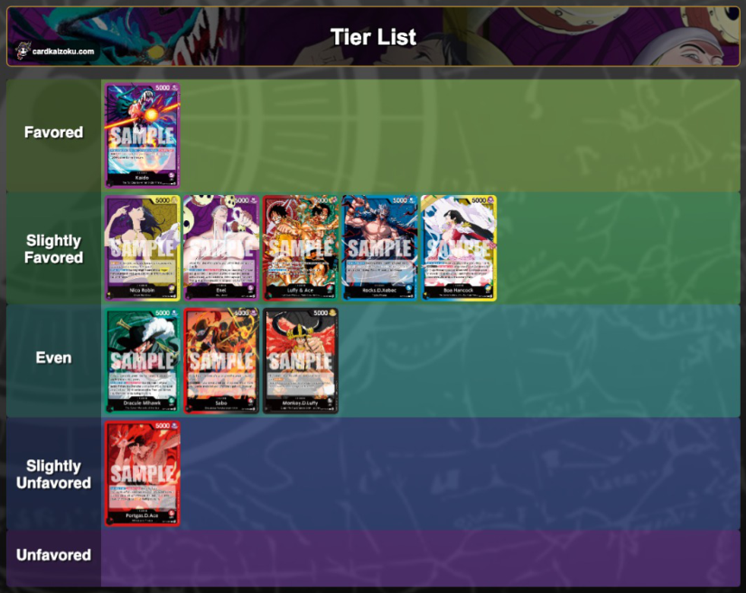
▦ Tier List — immagine da cardkaizoku.com, le carte mostrate sono i Leader avversari (art "SAMPLE")
| Tier | Leader |
|---|---|
| Favored | Kaido |
| Slightly Favored | Nico Robin · Enel · Luffy & Ace · Rocks.D.Xebec · Boa Hancock |
| Even | Dracule Mihawk · Sabo · Monkey.D.Luffy |
| Slightly Unfavored | Portgas.D.Ace |
| Unfavored | (vuoto) |
Green Mihawk is the centerpoint of the OP17 meta. Coming in strong as one of the best decks in OP16.5 and then receiving a new and shiny boss card in 10C Shanks, OP17 has become a bit of a "play Mihawk or counter Mihawk" kind of meta.
Even then, in my opinion there is no true counter to Mihawk, as even the supposed counter decks feel manageable with the right gameplan.
In a way, with Mihawk being the "best" deck of the meta, he is more difficult to play now, because he has a huge target on his back, with many decks teching to counter you and studying the matchup well.
That being said, the raw power of Green Mihawk in OP17 is still very strong. He has been doing very well in tournaments, and he is probably the most reliable Leader to play if you want to top consistently in your tournaments, assuming you follow the correct gameplan.
Matchup Strategies — Matchup Strategies vs The Meta
🗂 Carte citate nel capitolo indice del trascrittore
| ID | Nome | Note |
|---|---|---|
| OP14-020 | Dracule Mihawk (Leader) | "Green Mihawk"; anche nella tier list (Even, mirror) |
| OP17-022 | Shanks | "10C Shanks", la nuova boss card di OP17 |
| OP17-058 | Kaido (Leader) | Tier list — Favored |
| n/d | Nico Robin (Leader) | Tier list — Slightly Favored; ID non indicato nella fonte |
| OP15-058 | Enel (Leader) | Tier list — Slightly Favored |
| n/d | Luffy & Ace (Leader) | Tier list — Slightly Favored; ID non indicato nella fonte |
| OP17-039 | Rocks.D.Xebec (Leader) | Tier list — Slightly Favored |
| n/d | Boa Hancock (Leader) | Tier list — Slightly Favored; ID non indicato nella fonte |
| OP13-004 | Sabo (Leader) | Tier list — Even |
| n/d | Monkey.D.Luffy (Leader) | Tier list — Even; ID non indicato nella fonte |
| OP16-001 | Portgas.D.Ace (Leader) | Tier list — Slightly Unfavored |
Matchup Strategies vs The Meta
Trascrizione verbatim dalla guida di Raphterra.
Matchup Strategies vs The Meta
Vs. Green Mihawk Mirror
OP14-020
▦ Cheat sheet — "OP17 CHEAT SHEET | OP14 MIHAWK VS MIRROR" (Raphterra · ONE PIECE CARD GAME · metafy)
| Sezione | Contenuto |
|---|---|
| MACRO GAMEPLAN | GO WIDE, ADAPT LATE — DRAW CARDS AND GO WIDE EARLY-TO-MID GAME, THEN ADAPT YOUR LATE-GAME PLAN BASED ON THE COMBO PIECES YOU'VE DRAWN. |
| GENERAL TIPS | - CONTROL THE BOARD EARLY-TO-MID GAME USING YASOPP TO REST AND PICK OFF 6K CHARACTERS. - ADJUST YOUR LATE-GAME STRATEGY BASED ON WHICH COMBO PIECES YOU HAVE IN HAND. - PLAY AGGRESSIVELY TOWARD LIFE IF YOU CAN CHAIN ELECTRICAL LUNAS TO FREEZE THE BOARD. - IF YOU LACK BOARD-FREEZE TOOLS, CLEAR THE BOARD AND PLAY FOR A LONG GAME INSTEAD. |
| MULLIGAN PRIORITY | Perona · Kinemon ST32-001 · SAMPLE — ID illeggibile |
| MATCHUP DIFFICULTY | EVEN |
| IDEAL TURN ORDER | GO SECOND |
| CORE CARDS | WIN CONDITIONS (4 carte) · TECH CARDS (2 carte) — ID illeggibili |
| OPPONENT'S KEY CARDS | WATCH OUT (4 carte) · RESPECT (1 carta) — ID illeggibili |
EarlyEarly Game (1 to 4 DON!!)
Searching, Drawing, and The Weenie War
Your goal in the early game is simple: draw as many cards as you can and search to fill out your curve.
The Search Ladder
Follow The Early Search Ladder from Chapter 3: 5C Oden first, then 6C Law or 6C Mihawk, then your late game combo cards (10C Shanks, 3C Electrical Luna, or 5C Kawamatsu as Decken fodder) once you already have a relatively good hand.
You Can Be My Samurai and The Weenie War
This is very important in the early game, especially on the 3 to 4 DON!! turns. If you have You Can Be My Samurai, your instinct will be to use it immediately to draw cards, but consider the following factors before playing it.
By being patient with your 1C You Can Be My Samurai, you accomplish the following:
- Law on Curve Comes FirstYou secure your on-curve 6C Law. Remember, you can still use 1C You Can Be My Samurai on later turns, once you're sure you don't need to keep your weenies safe anymore.
- Punish Their RestIf your opponent rests their weenies carelessly, you can use your weenies to hit into theirs, possibly locking them out of 6C Law or extra copies of 1C You Can Be My Samurai.
You can play 1C You Can Be My Samurai immediately if:
- Not Enough AttackersYour opponent doesn't have enough weenies to clear yours, even if they rest them.
- Backup Weenies: You have other weenies in hand to play, even if your opponent clears the ones already on board.
- The 6C Mihawk BuildYou are running 6C Mihawk and don't mind your opponent clearing your weenies, because you're not reliant on 6C Law anyway.
- Dig or DieYou have a bad hand and really need the draw from 1C You Can Be My Samurai.
MidMid Game (5 to 9 DON!!)
Assembling Combo Pieces and The Battle for Board Dominance
Before we dive into the board control battle, which will be a long discussion, we first need to discuss assembling your combo pieces for the late game.
Assembling Your Combo Pieces
Throughout the mid game, you will be searching with 1C Perona and countering on defense, and it's very, very important to prepare for the late game.
- 10C Shanks or 10C Law Bepo: 2 to 3 copies.
- 2C Vander Decken + 5C Kawamatsu: At least 1 pair.
- 3C Electrical Luna: At least 1 copy.
The Battle for Board Dominance
Your goal in the mid game is to limit your opponent's board and take out 6k characters to get ahead in the resource battle.
Board or Life? The common mid game question is whether to attack the board or life. The short answer: if there are rested 6k bodies to attack, attack them and try to clear the board.
- The 3-Card Rule: If it will cost 3 or more counter cards to defend, it's very rarely worth defending a character. Let it go and save your resources for later.
- The 2-Card Rule: If it only requires 2 counter cards, protect the character if:
- It's 5C Yasopp.
- You don't have follow-up characters for the following turns, and you need that character to keep up in the board battle.
- You drew a lot of cards through You Can Be My Samurai early, so you can afford to throw away counter cards to keep your board.
- The Fishman Warning: One very important point I must highlight: be very careful discarding Fishman cards when countering, because you need your Vander Decken + Fishman combo in the late game to take out your opponent's 10C Shanks. Counter with the cards listed in Counter With These First (Chapter 3) instead.
MidThe 5 DON!! Turn
Before we go further, I want to talk about the opening phase of the mid game: the 5 DON!! turn.
The 5-Cost Target: The 5C character you put down on the 5 DON!! turn will, most of the time, either get rested by 5C Yasopp and attacked into, or get stunned by 5C Oden. With this in mind, here are some pointers for the 5 DON!! turn:
- Bonney or Perona at 5The best characters to play at 5 DON!!, if you have them, are 5C Bonney, to freeze your opponent's 6 DON!! turn and stop them from going wide, or 5C Perona, because she's very likely to stick on board.
- Oden Before YasoppIf you have a choice between 5C Oden and 5C Yasopp, play 5C Oden, since you may need 5C Yasopp next turn to rest the opponent's Yasopp and attack into it.
- The Skip ExceptionI would consider skipping a 5C play on my 5 DON!! turn if I only have one 5C in hand. Since I know that 5C character will just get taken out or stunned, I'd rather use it on the following turn, and use my 5 DON!! turn to search and draw for more 5-costs for future turns.
MidThe Key Mid Game Pieces
Here are some of the important pieces in the mid game of the Green Mihawk Mirror, and how they factor into this battle.
5C Yasopp is the most important 5-cost in this matchup, for the following reasons:
- He can force rest the opponent's mid game characters, letting you attack into them and clear them.
- If he stays on board, he can keep attacking and restanding himself, staying safe from attacks.
- Even when played rested from 6C Law, he restands himself immediately, staying safe from attacks.
- The Late Game ShieldMost importantly, if he survives the mid game into the late game, he can keep restanding 10C Shanks, so your opponent needs more combo pieces in the late game to answer 10C Shanks (more on this later).
5C Perona is quite strong in the mirror as well. She's a sticky character that maintains board presence while stopping your opponent's 5C characters from attacking.
In theory, 5C Oden is one of the highest value cards in the game, but in the mirror he's surprisingly the least impactful card to play, especially at 5 to 7 DON!!.
5C Freeze Bonney is most impactful in the mid game at exactly 5 DON!!, freezing your opponent's DON!! to stop their 6 DON!! go-wide play.
- They Need the ComboYou are ahead on board with multiple 6k characters, so your opponent will likely need the 10C Shanks + Electrical Luna combo to regain tempo.
- The Shanks-Only HandYour opponent has no other good play besides 10C Shanks. You can assume this if they take many copies of 10C Shanks from their searches, or if you notice they aren't doing 6+5 in the mid game, which might mean their hand is counter events and 10C Shanks.
- Buying TimeYou don't have your late game combo piece (10C Shanks) and need to delay the late game combo battle to search and dig for ammunition. This can buy you a lot of time, especially if you have 6C Law in hand to bounce and replay 5C Bonney for multiple turns while you stall and assemble combo pieces.
This one shows the utility of Freeze Bonney in the endgames of the mirror. (P.S Do Not Starve Mihawk, I did not do this intentionally)
1C For Fun
1C For Fun is a great card for getting ahead in the board control battle, as it can secure the kill on a rested 5C character, most ideally 5C Yasopp.
Counter, Then Kill: Attack the rested character with 6k or 7k attacks to make your opponent counter, then kill it anyway with 1C For Fun.
1C Billion Fold
The 8k Check: If you are attacking and your opponent does not have 8 rested cards (cards include the Leader, characters, and stage, by the way), you can attack for 8k and require at least 2 counter cards to protect a character.
The 3C Electrical Luna Factor
Finally, the most important factor to keep in mind in the mirror's mid game is 3C Electrical Luna.
Consider saving cards in hand instead of going too wide, and perhaps allocating the DON!! to offense if that fits your gameplan better.
- The 3+ Luna RaceYou have 3+ copies of Electrical Luna. All your attacks should go to the Leader, since you will effectively disable their whole board before their attackers get to attack again.
- The Hail MaryYou don't have a good late game hand, e.g. you lack the combo cards (10C Shanks or 2C Vander Decken) but you have freeze spells. You may need a Hail Mary YOLO attack on the Leader, assuming you have enough freeze effects to stall your opponent's attacks and get them before they get you.
- Know Your CeilingYou have to recognize whether you can play the long game. If you don't have the tools to compete in a late game combo battle, recognize it and go for a full race instead.
- The Early Low LifeYour opponent showed a lack of counters in the early to mid game and went to 1 life too early. Start spamming 8k attacks at face to test their counters. If they go too low, you may get a quick win with Rush 10C Shanks.
LateLate Game (10 DON!!+)
The Battle of Combo Pieces
The late game is a battle of combo pieces. The main combo pieces are 10C Shanks, 3C Electrical Luna, and 2C Vander Decken + any Fishman card.
LateLate Game Guidelines
Ultimately, you can follow these general guidelines for the late game:
- Luna LethalGo aggressive on life if you can set up lethal while freezing the board with 3C Electrical Luna.
- The Long Game ClearGo for a board clear if you don't have clear lethal yet and you have the tools for a longer game, e.g. multiple 10C Shanks and plenty of counter cards to survive the aggression.
- Bad Hand, Fast ClockGo aggressive on life if you have a bad hand without the tools for a long game, and you need to end the game as soon as possible.
It can be very scary if you don't win before running out of 3C Electrical Lunas and you let their board survive, since they can suddenly go for lethal with 8k+ attacks and 10C Shanks.
TurnoGoing Second: Don't Open With Shanks if not needed
- When going second, you don't need to open the late game with 10C Shanks immediately if you're not behind on board, especially if you only have 1 to 2 copies in hand and you're still far from lethal. Your 10C Shanks is very likely to get KOd by Vander Decken on the following turn, so preserve it for when you need your own Shanks + Decken combo on future turns.
- Make Them Combo FirstAlternate plays, like using 5C Perona to freeze attackers or using most of your DON!! to clear the board, can force your opponent to use their Shanks Luna combo first, and then you can answer with your own Shanks Decken combo. If you can afford to delay spending your Shanks Decken Luna cards as the late game starts, you save them to answer your opponent's combo.
- The 3+ Shanks ExceptionIf you have 3+ copies of 10C Shanks in hand, it's often better to drop one immediately and start the race, forcing your opponent to spend their combo knowing you have ammunition to fight back.
Answering 10C Shanks
The Always Rule: ALWAYS preserve your 2C Vander Decken + Fishman cards in hand to take out your opponent's 10C Shanks.
If you don't have 2C Vander Decken, you have a few options for answering an opponent's 10C Shanks:
- 10C Law BepoAs covered in 10C Law Bepo: The One-Card Combo (Chapter 3), he gives you the body, the freeze, and the board-weakening Leader buff in a single card. The main difference from the Shanks Decken Luna combo is that you don't get to rush down the opponent with a big attacker, but your boosted Leader attack can still force a counter event or a life take.
- The Bepo WindowThe best window for 10C Law Bepo is usually the turn after you use your Shanks Decken combo, to lock down the opposing Shanks. If your opponent has run out of Shanks Decken combos, you can play another 10C Shanks and go for lethal with two big attackers.
This game showcases the strenght of 10C Law Bepo in the mirror, in games where you do not have the complete combo pieces in hand.
- 10C Shanks BombAnother way to take out an opposing boss is to manually bomb it with a 17k attack from Rush Shanks and hope your opponent doesn't have enough counters to defend it. When doing this, bait out counter cards first with 6k attacks before bombing their boss.
This one showcases me needing to rely on bombing my opponent's Shanks with big attacks.
- 5C Freeze BonneyShe can also be a decent way to freeze the rested 10C Shanks, but it's a pretty weak turn because you don't establish any bodies. If you're left with this option, you need to make multiple 8k+ attacks on the Leader and end the game soon.
- The Hail Mary RaceIf you don't have a clean answer to 10C Shanks, your opponent can lethal you very, very soon. In the worst-case scenario, you have to go for a Hail Mary race gameplan.
- Survive, Then SwingControl the board just enough that you don't die on the following turn, and focus the rest of your attacks on the Leader, aiming to end the game as soon as possible and hoping for the best.
The Yasopp Factor - As I mentioned in the previous section, 5C Yasopp surviving into the late game is very strong, because he can restand 10C Shanks at end of turn. Your opponent then needs 10C Shanks + Decken to clear it, and if they miss a 10C Shanks or 10C Law Bepo turn, you are likely to just win the game, because your 12k body stays on board to wreak havoc.
After the Combo Cards Run Out
Once you run out of combo cards, the game becomes a battle of controlling your opponent's board just enough to survive the following turns while setting up lethal.
LateReading Your Distance to Lethal
Before ending this section, I want to emphasize that you have to read the game state and recognize how far you are from lethal. Here are some pointers:
- Control Beats GreedGenerally, going for board control is safer than going for lethal, unless you have a clear lethal path that keeps you safe even while ignoring the opposing board (e.g. multiple Electrical Lunas until your lethal turn).
- Too Far? Tax ThemIf you are still very far from lethal because your opponent still has many hand cards, either control the board to limit their options, or attack their life for 8k or higher to bring yourself near lethal or ask for 2+ counter cards.
- Behind With No AmmoIf you are behind and don't have the cards to keep up in a prolonged end game, start going for a Hail Mary lethal, controlling the board only enough that you don't die to your opponent's lethal.
- Call It at 8 DON!!Sometimes you have to recognize this as early as the 8 to 9 DON!! turns, where you need to start making multiple 8k+ attacks on the Leader to end the game as soon as possible.
- The No-Answer SignalThe most common example is not having a clean answer to your opponent's 10C Shanks. Then you know the game will end shortly once their 10C Shanks gets to stay on board and attack.
This one shows me adapting my gameplan in the mid-game as soon as I read that I cannot survive a prolonged battle.
Playing to Your Outs
If you really have no lethal and don't have the necessary combo cards either, you have to play to your outs and hope your opponent also doesn't have the ideal hand. It's an important skill to realize when you can no longer afford to play around certain threats, and instead bet on your opponent not having them in hand. Some examples:
- Out of LunasHoping your opponent has run out of Electrical Luna, so you can go aggressive with your wide board.
- No ShanksHoping your opponent doesn't have 10C Shanks, so you can safely wall up behind 6C Law blockers.
- No CountersHoping your opponent doesn't have 2k counters or a 4k counter event, so you can go for lethal or take out key rested characters.

Vs. Purple Yellow Robin
OP09-062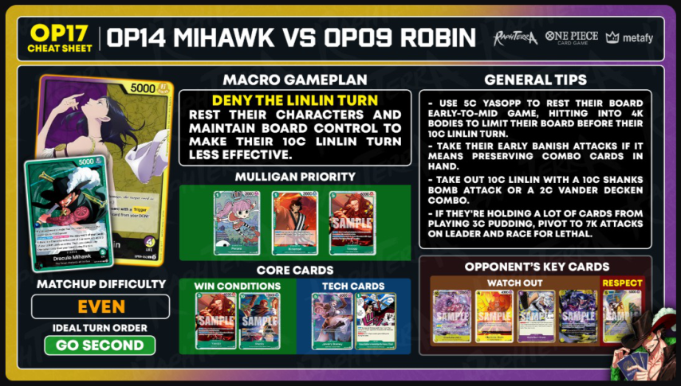
▦ Cheat sheet — "OP17 CHEAT SHEET | OP14 MIHAWK VS OP09 ROBIN" (Raphterra · ONE PIECE CARD GAME · metafy)
| Sezione | Contenuto |
|---|---|
| MACRO GAMEPLAN | DENY THE LINLIN TURN — REST THEIR CHARACTERS AND MAINTAIN BOARD CONTROL TO MAKE THEIR 10C LINLIN TURN LESS EFFECTIVE. |
| GENERAL TIPS | - USE 5C YASOPP TO REST THEIR BOARD EARLY-TO-MID GAME, HITTING INTO 4K BODIES TO LIMIT THEIR BOARD BEFORE THEIR 10C LINLIN TURN. - TAKE THEIR EARLY BANISH ATTACKS IF IT MEANS PRESERVING COMBO CARDS IN HAND. - TAKE OUT 10C LINLIN WITH A 10C SHANKS BOMB ATTACK OR A 2C VANDER DECKEN COMBO. - IF THEY'RE HOLDING A LOT OF CARDS FROM PLAYING 3C PUDDING, PIVOT TO 7K ATTACKS ON LEADER AND RACE FOR LETHAL. |
| MULLIGAN PRIORITY | Perona · Kinemon ST32-001 · SAMPLE — ID illeggibile |
| MATCHUP DIFFICULTY | EVEN |
| IDEAL TURN ORDER | GO SECOND |
| CORE CARDS | WIN CONDITIONS (2 carte) · TECH CARDS (2 carte) — ID illeggibili |
| OPPONENT'S KEY CARDS | WATCH OUT (4 carte) · RESPECT (1 carta) — ID illeggibili |
The 10C Linlin Turn
This matchup comes down to preparing for the opponent's 10C Linlin turn. They can usually ramp to play 10C Linlin one turn earlier, and we want to prepare for this power turn.
The key to preparing for the 10C Linlin turn is understanding the following:
- Linlin Needs a Board10C Linlin alone isn't a strong play. She needs to be played alongside a board of 4k characters, which are usually play-trigger cards that come out of their life when you damage them.
- Linlin Spends EverythingPlaying 10C Linlin uses all their DON!! for the turn, meaning they have no DON!! left for stronger attacks or for counter events like 1C Gum Gum Giant.
With this, keep the following in mind for their 10C Linlin turn:
- Starve the Linlin BuffClear and/or limit their board so that by the time they play 10C Linlin, they can't immediately capitalize on her passive board stat boost. We do this with cards that rest opponent's characters so we can attack into them: 5C Yasopp, plus 1C Trash Event if you have it in the deck.
- Keep a Board of Your OwnIf they do have a board when they drop 10C Linlin, make sure that by the time their board attacks, you also have a board to clear their 4ks once they're rested.
- The Bonney DelayWe also have the option to delay their 10C Linlin turn with 5C Freeze Bonney if she's in your deck. This is sometimes ineffective, though, because they can often just play 8C Teach instead and still have a strong board development play.
This one showcases the power of Freeze Bonney in the Robin matchup, especially if you can freeze dons for consecutive turns.
EarlyEarly to Mid Game
With these pointers, our main goal in the early to mid game is to build a board, ideally with 5C Yasopp, to rest their 4k characters and hit into them. The gameplan seems simple enough, but some complications make the journey less smooth in this matchup.
Robin Leader's Banish
Robin will usually only attack with their Leader in the early to mid game, using Banish attacks, and leave their characters active as they build a board of 4k characters for their 10C Linlin turn. This means your hand size will be limited throughout the game, and you have to work with what you manually draw from your deck.
- The 1-Card Counter RuleThe general rule: if you have cards in hand you don't need, counter attacks that only require one card to counter. Otherwise, it's okay to take 1 to 2 Banish attacks in the early game.
- The 3-Life ThresholdI start considering countering at 3 life, since going down to 2 life too early can be dangerous.
- Don't Counter With TheseThe cards you don't want to use as counters are mainly 5C Yasopp and your Fishman combo cards, 2C Vander Decken and 5C Kawamatsu. You need the Decken Kawamatsu combo to clear the first 10C Linlin, so keep it in hand as you approach the late game.
- The Late Game HandYou generally want 2x 10C Shanks, 1x Vander Decken, and 1 Fishman discard fodder as you approach the later turns.
To Starve or Not to Starve?
I mentioned that we generally want to rest and attack into the board most of the time, so a common question arises: should we skip free attacks to the Leader if there are no characters to hit? In theory, skipping Leader attacks prevents any chance of characters coming out from triggers. Here are my thoughts:
- Never Skip Free Damage: I almost never skip free Leader attacks in the early to mid game if there's nothing rested to hit on board. With every Leader attack, they either counter or take life, which brings me closer to lethal. If a character comes out of a trigger, I can rest and hit into it in future turns.
- The Lethal Window: If you skip early attacks, you give them too much time to build a board and draw cards for the late game. Purple Yellow Robin can be pretty easy to lethal in the late game if you keep up the pressure with 7k-plus attacks and bring them to low life. If you skip free Leader attacks early, you rob yourself of those late game windows where you can just aggro them down.
- The Trigger Highroll: If they somehow highroll and get out a lot of play triggers, we still have opportunities to clear them later once they attack, or we can force rest them all with 10C Shanks and hit into them.
- The Late Game Exception: There are some spots where I would skip free Leader attacks, but those are in the late game, and we'll dive into them later on.
Yasopp OP17-031 — costo 5, 6000 potenza, tipo Red-Haired Pirates
I Never Bother to Remember the Faces of Trash OP14-038 — evento costo 1, testo: "You may rest 2 of your cards. Draw 1 card. Then, rest up to 1 of your opponent's Characters with 7000 base power or less." / "Trigger: Up to 1 of your Leader gains +3000 power during this battle."
Controlling Their Board
Our main tools for controlling the board are 5C Yasopp and 1C Trash Event. It's pretty straightforward: we rest any 4k characters on board and hit into them.
The 4C Oven Problem
Hitting 4k characters sounds simple, right? However, one character is quite annoying to deal with: 4C Oven. 4C Oven has an On KO effect that plays another character from trash, so KOing it won't solve the problem. Here's how to deal with 4C Oven:
- Hit Others FirstIf there are characters on board other than 4C Oven, hit into them first if you have limited attacks for the turn.
- Freeze the OvenYou can freeze Oven with 5C Oden if you don't have enough attackers to clear him and the character he puts out. If you can stun him repeatedly with 5C Oden, you can sometimes ignore him throughout the game.
- The Oven Clear LineIf 4C Oven is already rested, hit into him, then once he puts out a character, rest that character with 5C Yasopp and hit into it. Do this if:
- You have enough attackers for the combo and there are no other characters on board to attack.
- You don't have 5C Oden to keep freezing the Oven.
- Inspect the TrashThe strongest character they can play with 4C Oven is 3C Pudding, to draw cards. Beyond that, you usually don't mind any other character being played. If there's no 3C Pudding in trash, it's almost always worth clearing the 4C Oven so you get rid of it for the following turns.
- The Pudding CounterYour opponent can counter with a 3C Pudding from hand to put it in trash before Oven gets KOd, but at that point it's fine, because they discard cards from hand.
- Pudding Already BuriedIf there is a 3C Pudding in trash, the 4C Oven line can still be worth it if it results in a full board clear. If not, it's usually better to aim those two attacks at the Leader to apply pressure.
The No-Yasopp Plan
- Protect Your LifeI would be a bit more protective of my life cards, since I know I'll need to take more life cards once their board attacks. I try to stay at around 4 life if I can.
- Perona Buys Time5C Perona also helps a lot here, since you can stun 2 bodies before they attack with multiple 8k attacks, buying time for your 10C Shanks turn. This also applies if you have a read that you can't clear the board as they approach
their ramped 10 DON!! turn.
- Keep Attackers BackI make sure I have a board that can attack back into theirs once their board eventually gets rested. This may mean skipping some character attacks so I have 6k bodies to hit into their 4k bodies on my attack turn.
- The Careless RestIf you carelessly rest your whole board, your opponent will likely attack into it with consecutive 8k attacks to clear it.
- Billion Fold BackupPreparing 1C Billion Fold to defend rested characters is also good if you really need to attack with your board.
LateThe Late Game
For a smooth late game, you generally want as many copies of 10C Shanks as possible (2x is ideal, but more is always welcome) and at minimum one pair of Decken + Fishman fodder.
Dealing With the First 10C Linlin Turn
The 8 to 9 DON!! Linlin: When the first 10C Linlin drops, you will usually be at 8 to 9 DON!!, due to their ramp Leader ability.
The Double Linlin Threat: The best case for Purple Yellow Robin is playing two consecutive 10C Linlins. While this seems scary, it's not all that dire.
On their first 10C Linlin turn, there are two possible scenarios:
- The Cleared Board (Best Case)If you have cleared the board, their 10C Linlin turn is not that strong, since they only have their 5k Leader attack, which you can easily counter with 1 card. When the turn comes back to you, simply continue developing your board with a 6+5 and attack life.
- Life First, Then DevelopRemember to attack life before developing your board, since if a play trigger comes out of life, you may want to rest it with 5C Yasopp and hit into it to keep their board controlled.
- The Uncleared BoardIf you weren't able to control the board and they have some characters, then, as mentioned, you should have been a bit conservative with your life cards in the early to mid game, since you will need to take life cards here and go down to about 1 to 2 life. When the turn comes back to you, use your board to hit into theirs and clear it.
- The Last Attack ChoiceIf you only have 1 attack left after clearing the board, I would consider skipping the Leader attack IF a play trigger coming out of life would be devastating. If you are still relatively healthy and have enough counter cards, just hit life and deal with the play trigger that comes out.
Dealing With the Second 10C Linlin Turn
On the opponent's second 10 DON!! turn, their best case is playing another 10C Linlin, so they now have two 10C Linlins on board. This is where your collected combo cards come in: 10C Shanks and 2C Vander Decken + Fishman fodder.
- A Trigger Comes Out: If they take the life cards and a play trigger comes out, rest it and attack into it with 10C Shanks.
- No Trigger, Push Life: If they take life and no play trigger comes out, use this turn to pressure life and put them on a lethal timer. Use 2C Vander Decken to take out one of the 10C Linlins, then send the 10C Shanks attack at life alongside more 7k attacks.
- Counters Spent, Bomb Linlin: If they counter the earlier attacks and go low on hand size, depending on their remaining hand, you can skip 2C Vander Decken and instead bomb a 10C Linlin with a 17k attack, then preserve 2C Vander Decken to KO the remaining Linlin on the following turn. They don't have Gum Gum Giant active during this turn, so a 17k attack is very likely to clear the Linlin.
Shanks — costo 10, 12000, Red-Haired Pirates
Electrical Luna OP08-036 — costo 3, evento, Minks; testo: "All of your opponent's rested characters with a cost of 7 or less do not become active during your opponent's next refresh phase." / "Trigger: Rest up to one of your opponent's characters."
Trafalgar Law OP13-031 — costo 6, 6000, Heart Pirates/Supernovas
Kouzuki Oden ST32-002 — costo 5, 6000, Land of Wano/Kouzuki Clan
Perona — costo 5, 6000, Thriller Bark Pirates
LateClosing Out the Game
Assuming the plan goes well, the rest of the game should be relatively smooth. Take out the remaining 10C Linlin with a bomb attack from Shanks or with 2C Vander Decken.
When the Plan Goes Wrong
Not every game in a card game goes to plan. Here are some scenarios where it goes wrong:
- The Pudding HandThe opponent played a lot of 3C Puddings and has too many cards in hand, making it impossible to clear the 10C Linlin even with bomb attacks, and you don't have 2C Vander Decken.
- The Missed Shanks: You miss your on-curve 10C Shanks.
- The Oven Flood: Your opponent triggered too many 4C Ovens, and you don't have enough attacks to clear them.
- The Teach Flood: Your opponent triggered too many 8C Teaches and cleared your board.
Sometimes, Robin also bricks, if they miss out on key cards even if they get good triggers.
Other Notes

Vs. Red Ace
Portgas.D.Ace OP16-001 — LEADER, 5000 potenza, attributo SPECIAL, 5 LIFE, Whitebeard Pirates, colore rosso. Testo: "[Activate:Main] [Once Per Turn] Up to 1 of your [Monkey.D.Luffy] Characters or up to 1 of your Characters with a type including "Whitebeard Pirates", with 8000 power or more, gains [Rush] during this turn."
- DifficultySlightly Unfavored. If they win the dice and have a god draw, there is not much we can do, but they can be pretty inconsistent.
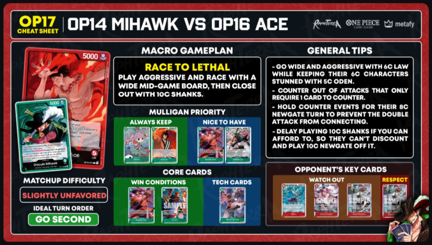
▦ OP14 MIHAWK VS OP16 ACE cheat sheet
Intestazione: OP17 CHEAT SHEET | OP14 MIHAWK VS OP16 ACE (loghi RaphTerra, ONE PIECE CARD GAME, metafy)
| Riquadro | Contenuto |
|---|---|
| Leader mostrati | Portgas.D.Ace OP16-001 5000, 5 LIFE (rosso) e Dracule Mihawk OP14-001? 5000, 5 LIFE (verde) |
| MACRO GAMEPLAN | RACE TO LETHAL — PLAY AGGRESSIVE AND RACE WITH A WIDE MID-GAME BOARD, THEN CLOSE OUT WITH 10C SHANKS. |
| GENERAL TIPS | - GO WIDE AND AGGRESSIVE WITH 6C LAW WHILE KEEPING THEIR 6C CHARACTERS STUNNED WITH 5C ODEN. - COUNTER OUT OF ATTACKS THAT ONLY REQUIRE 1 CARD TO COUNTER. - HOLD COUNTER EVENTS FOR THEIR 8C NEWGATE TURN TO PREVENT THE DOUBLE ATTACK FROM CONNECTING. - DELAY PLAYING 10C SHANKS IF YOU CAN AFFORD TO, SO THEY CAN'T DISCOUNT AND PLAY 10C NEWGATE OFF IT. |
| MULLIGAN PRIORITY — ALWAYS KEEP | Perona costo 1, 2000 · Kinemon ST32-001 costo 1, 3000 |
| MULLIGAN PRIORITY — NICE TO HAVE | Kouzuki Oden ST32-002 costo 5 · Trafalgar Law OP13-031 costo 6, 6000 |
| MATCHUP DIFFICULTY | SLIGHTLY UNFAVORED |
| IDEAL TURN ORDER | GO SECOND |
| CORE CARDS — WIN CONDITIONS | Kouzuki Oden ST32-002 costo 5 · Shanks costo 10, 12000 |
| CORE CARDS — TECH CARDS | Jewelry Bonney OP07-026 costo 5, 6000 |
| OPPONENT'S KEY CARDS — WATCH OUT | Marco costo 6 · Edward Newgate costo 8 · Edward Newgate costo 10 |
| OPPONENT'S KEY CARDS — RESPECT | Edward Newgate? costo 10 — carta rossa parzialmente coperta dall'artwork di Mihawk nell'angolo |
The Ace Win Pattern
Red Ace is a matchup where, if your opponent draws all the tools they need, there is not much you can do. Their game-winning pattern is 6C Marco into 8C Newgate, then spamming consecutive 10C Newgates.
Kouzuki Oden ST32-002 — costo 5, potenza 6000, CHARACTER verde, tratto "Land of Wano/Kouzuki Clan"
Trafalgar Law OP13-031 — costo 6, potenza 6000, CHARACTER verde, tratto "FILM/Supernovas/Heart Pirates"
The Race Plan
The gameplan in this matchup is straightforward, nothing special: go aggressive with consecutive 6+5 turns, stunning one of their attackers every turn with 5C Oden and setting up 6C Law as a late game blocker.
Marco — costo 6, potenza 8000, carta blu/azzurra
Edward Newgate — costo 6, potenza 10000, immagine "SAMPLE"
Edward Newgate — costo 10, potenza 12000, immagine "SAMPLE"
MidThe 8 to 9 DON!! Turn
LateYour First 10 DON!! Turn
Another critical decision is your first 10 DON!! turn.
5C Freeze Bonney is the best tech card in this matchup, for two reasons:
- The Marco Lock: If you lose the dice and go first, you can use her on your 5 DON!! turn to freeze their DON!! and stop their on-curve 6C Marco. This alone can set them behind, since they then need to choose between playing 6C Marco or 8C Newgate on the following turn.
- The 10 DON!! Lock: She's also great in a 6+5 or 5+5 play on your 10 DON!! turn, developing two bodies and then freezing the opponent's DON!!, locking them out of their 10C Newgate turn and letting your wide board keep up the pressure on the following turn.
Red Ace in the Current Meta
Note: Gameplay videos are to follow, surprisingly I don't face Red Ace a lot on the sim. Most of my games against it are at the tabletop.

Vs. Black Luffy
Monkey.D.Luffy OP17-079 — LEADER, 5000, {Strike}, 5 LIFE, nero, tratti "Elbaph/The Four Emperors/Straw Hat Crew". Testo: "All of your Characters with a cost of 12 or more gain [Blocker]. (After your opponent declares an attack, you may rest this card to make it the new target of the attack.)" — immagine "SAMPLE"
▦ Vs. Black Luffy cheat sheet
| Riquadro | Contenuto |
|---|---|
| Difficulty | Even. It can go either way depending on draws and the dice roll, but it's slightly favored for Mihawk on average. |
| Turn Order | Go Second, to give them 1 less hand card and to steal their ideal curve. You can also play 10C Shanks the fastest when going second. |
| Mulligan | 1C Perona, 1C Kinemon. If you have a good hand: 5C Oden, 5C Yasopp, 10C Shanks. |
| Win Condition | 10C Shanks |
| Cards to Watch Out For | 8C Luffy, 1C Chopper, 2C Zoro |
| Tech Cards | 1C For Fun, 1C Trash Event |
| Macro Gameplan | Keep attacking and controlling the board, aiming for a full board clear on your 10C Shanks turn. |
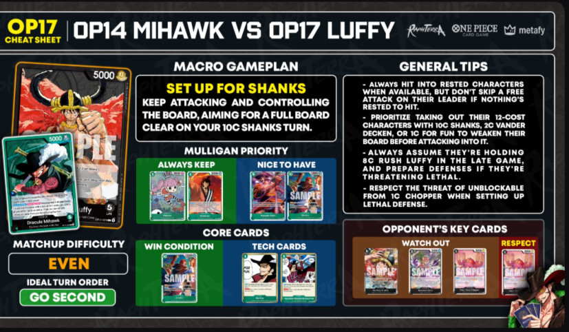
▦ VS. BLACK LUFFY cheat sheet
Intestazione dell'infografica: OP17 CHEAT SHEET | OP14 MIHAWK VS OP17 LUFFY (loghi RaphTerra, ONE PIECE Card Game, metafy)
| Riquadro | Contenuto |
|---|---|
| MACRO GAMEPLAN | SET UP FOR SHANKS — KEEP ATTACKING AND CONTROLLING THE BOARD, AIMING FOR A FULL BOARD CLEAR ON YOUR 10C SHANKS TURN. |
| GENERAL TIPS | - ALWAYS HIT INTO RESTED CHARACTERS WHEN AVAILABLE, BUT DON'T SKIP A FREE ATTACK ON THEIR LEADER IF NOTHING'S RESTED TO HIT. - PRIORITIZE TAKING OUT THEIR 12-COST CHARACTERS WITH 10C SHANKS, 2C VANDER DECKEN, OR 1C FOR FUN TO WEAKEN THEIR BOARD BEFORE ATTACKING INTO IT. - ALWAYS ASSUME THEY'RE HOLDING 8C RUSH LUFFY IN THE LATE GAME, AND PREPARE DEFENSES IF THEY'RE THREATENING LETHAL. - RESPECT THE THREAT OF UNBLOCKABLE FROM 1C CHOPPER WHEN SETTING UP LETHAL DEFENSE. |
| MULLIGAN PRIORITY — ALWAYS KEEP | Perona costo 1, 2000 · Kinemon ST32-001 costo 1, 2000 |
| MULLIGAN PRIORITY — NICE TO HAVE | Kouzuki Oden ST32-002 costo 5 · Shanks costo 10, 12000 (SAMPLE) |
| MATCHUP DIFFICULTY | EVEN |
| IDEAL TURN ORDER | GO SECOND |
| CORE CARDS — WIN CONDITION | Shanks costo 10, 12000 (SAMPLE) |
| CORE CARDS — TECH CARDS | For Fun OP14-037 costo 1, EVENT · [Card: ...Better ... Remember the Taste of Trash (nome parzialmente [ILLEGGIBILE]) (ID?)] costo 1, EVENT |
| OPPONENT'S KEY CARDS — WATCH OUT | Monkey.D.Luffy costo 8 (SAMPLE) · Roronoa Zoro costo 2 (SAMPLE) · Tony Tony Chopper costo 1 (SAMPLE) |
| OPPONENT'S KEY CARDS — RESPECT | Tony Tony Chopper costo 1 (SAMPLE) |
Nel riquadro in alto a sinistra della cheat sheet: la carta Leader Monkey.D.Luffy 5000 {Strike} 5 LIFE (SAMPLE) sovrapposta a Dracule Mihawk 5000, Leader verde. In basso a destra, illustrazione di Mihawk che tiene una mano di carte.
Yasopp OP17-031 costo 5, 6000
Perona costo 1, 2000
Kinemon ST32-001 costo 1, 2000
For Fun OP14-037 costo 1, EVENT
[Card: ...Better ... Remember the Taste of Trash (nome parzialmente [ILLEGGIBILE]) (ID?)] costo 1, EVENT
The Board Control Role
Your main goal in this matchup is board control. They are the aggro deck in this matchup, while you want to stall their aggression as you ramp up to your 10C Shanks turn. If you reach your 10C Shanks turn relatively healthy, you can clear the board and then lethal them within a few turns.
The Full Starve Question
A common question in this matchup is whether to run a full starve strategy. In theory, starving an aggro deck is ideal, since it makes the board easier to clear.
- The Draw Engine Problem: However, Black Luffy is similar to Blue Green Luffy: many of their characters draw cards On Play. Starving them may just lead to a late game where they have a lot of hand cards and life cards.
- Board Won, Clock Lost: Even if you control the board, you're too far from lethal to end the game, and they can start bombing you with big attacks even after their board is cleared.
- Rested First, Leader Otherwise: Generally hit rested characters if there are any, but do not skip free attacks on their Leader when there are no rested characters to hit. Skipping early attacks makes late game lethal much harder, especially since they can also set up multiple late game blockers.
- The Hand Count Exception: A scenario where I would consider skipping some early Leader attacks is when they play early characters that don't replace
themselves with a draw, such as 2C Zoro or 2C Sanji, and I can rest and attack into them with 5C Yasopp or 1C Trash Event in future turns. Otherwise, I almost always take my free Leader attacks.
Kouzuki Oden ST32-002 costo 5, 6000, tratto "Land of Wano/Kouzuki Clan"
Yasopp OP17-031 costo 5, 6000, tratto "Red Haired Pirates"
Perona costo 5, 6000, tratto "Mogia Kingdom/Thriller Bark Pirates"
MidThe Mid Game Plan
The gameplan in this matchup is quite simple: go 6+5, either using 5C Oden to freeze their 6C Loki or 4C Saul and then attacking rested characters to limit their aggression, or using 5C Yasopp to force rest a 2-cost and attack into it.
The 6C Loki Weenie Wipe
They will likely play 4C Saul and 6C Loki on curve as their Giants. 6C Loki is the one to watch out for, because he can clear all your 1C characters from the board.
Countering and Removal
Counter With Care: You generally want to counter 5k or 6k attacks if you already have a good hand, but preserve a 2C Vander Decken + Fishman fodder pair, because you'll need them to take out 6C Loki or 8C Luffy later on. Multiple Vander Decken + Fishman pairs help a lot in this matchup.
- Decken on Loki2C Vander Decken is your main hard removal card, usually used to take out 6C Loki.
- For Fun on Saul: 1C For Fun is also a good tech in this matchup, as it can cleanly take out a rested 4C Saul.
- Weakening the Rush TurnClearing their board of Giants also weakens their 8C Rush Luffy turns, since they need to play a Giant alongside Luffy to give him Rush. If they already have a Giant on board, they usually play a draw card instead of a Giant, adding more cards to their hand.
Nel frame: partita su simulatore, log di gioco a sinistra (menzioni di Shirahoshi (OP05-082), Roronoa Zoro (OP17-093), "Trash Demonic Aura Nine-Sword Style Asura Dead Man's Game (OP12-037)"), sovraimpressione "Mihawk Fish + Zoro: 6-1 / Shanks Cope: 3-2", chat YouTube sulla destra, webcam di Raphterra in basso a destra con scritta "CULT LEADER RAPHTERRA" e "metafy.gg/@raphterra". Pulsante "Guarda su YouTube".
Reach your 10C Shanks turn and turn the game around!
The Ideal 10C Shanks Turn
Your ideal 10C Shanks turn is playing 10C Shanks, taking out their Giants with Shanks' attack and 2C Vander Decken, then attacking their weakened board with the rest of your attackers.
LateSurviving Their Lethal Push
In the late game, if you successfully clear their board and/or whittle down their hand, Black Luffy will usually start going for big bomb attacks to lethal you as soon as possible. 6C Law, 5C Oden, and counter events are great for defending.
Keep in mind the following tools they have when going for lethal:
- 8C Rush Luffy8k Rush attacks. Always assume they will play this if they still have 8 DON!! up.
- 1C ChopperGrants their characters Unblockable. They can play two on two active characters for 2 bomb attacks.
Other Notes
Nel frame: partita su simulatore, log di gioco a sinistra (menzioni di Dracule Mihawk (OP14-020), Dracule Mihawk (ST32-003), "Rest Dracule Mihawk", "Activate 1 Don", "Can't play Cost 1 Or More Characters for the Turn!", "Draw 1 Card"), sovraimpressione "Mihawk Fish + Zoro: 5-1 / Shanks Cope: 3-2", chat YouTube sulla destra (commenti: "whats the zoro in the fish build?", "1c or 9c", "ouhhh spicy", "how ya enjoying fish so far", "ussop, saul, loki, luffy?", "second curve, 4 Saul 6 Loki 8 rush Luffy", "Oden is huge into loki, but for fun + 7c shanks is also good to remove saul/gerd"), webcam di Raphterra in basso a destra con scritta "CULT LEADER RAPHTERRA" e "metafy.gg/@raphterra". Pulsante "Guarda su YouTube".

Vs. Red Black Sabo
Sabo — LEADER, 5000, {Special}, rosso/nero, artwork con Sabo e fiamme. La carta è tagliata dalla cattura: nome, tratti, LIFE e ID non visibili.
🗂 Carte citate nel capitolo indice del trascrittore
| ID | Nome | Note |
|---|---|---|
| OP14-020 | Dracule Mihawk (Leader) | Immagine carta intera a inizio matchup Mirror. 5000, <Slash>, 5 LIFE |
| OP09-062 | Nico Robin (Leader) | Immagine carta intera a inizio matchup Purple Yellow Robin. 5000, <Strike>, 4 LIFE |
| OP17-022 | Shanks | ID leggibile nel log di gioco del video "Mirror 3 Rest Event" |
| OP13-031 | Trafalgar Law | ID leggibile nel log di gioco del video "Mirror 3 Rest Event" |
| OP17-031 | Yasopp | ID leggibile nel log di gioco del video "Mirror 2" |
| OP12-034 | Perona | ID leggibile nei log di gioco dei video |
| OP01-055 | You Can Be My Samurai!! | ID leggibile nel log di gioco del video "Mirror 2" |
| OP07-022 | Otama | ID leggibile nel log di gioco del video "Mirror 2" |
| ST32-002 | Kouzuki Oden | ID leggibile nel log di gioco del video "Mirror" |
| OP06-033 | Vander Decken IX | ID leggibile nel log di gioco del video "vs PY Robin" |
| OP17-111 | Charlotte Mont-d'or | ID leggibile nel log di gioco del video "vs PY Robin" |
| OP17-109 | Charlotte Pudding | ID leggibile nel log di gioco del video "vs PY Robin" |
| — | 10C Shanks | Citata nel testo; ID non leggibile nei banner |
| — | 10C Law Bepo | Citata nel testo |
| — | 3C Electrical Luna | Citata nel testo e nei banner |
| — | 2C Vander Decken | Citata nel testo e nei banner |
| — | 5C Kawamatsu | Citata nel testo e nei banner |
| — | 5C Jewelry Bonney (Freeze Bonney) | Citata nel testo e nei banner |
| — | 5C Kouzuki Oden | Citata nel testo e nei banner |
| — | 6C Law | Citata nel testo |
| — | 6C Mihawk | Citata nel testo |
| — | 1C Kinemon | Citata nel testo e nei banner |
| — | 1C Otama | Citata nel testo e nei banner |
| — | 1C For Fun | Citata nel testo e nel banner |
| — | 1C Billion-fold World Trichiliocosm (1C Billion Fold) | Citata nel testo e nel banner |
| — | 1C Trash Event | Citata nel testo |
| — | 10C Linlin | Citata nel testo (matchup Robin) |
| — | 4C Oven | Citata nel testo (matchup Robin) |
| — | 1C Gum Gum Giant | Citata nel testo (matchup Robin) |
| — | 3C Pudding | Citata nella cheat sheet (matchup Robin) |
| — | 8C Teach | Citata nel testo (matchup Robin) |
Matchup Strategies vs The Field (WIP)
Trascrizione verbatim dalla guida di Raphterra.
Matchup Strategies vs The Field (Work In Progress)
Dear Readers,
This section is still WIP, I need to play and record more games against these matchups, but unfortunately ladder is quite filled with mostly the meta decks.

Vs. Blue Yellow Boa Hancock
Macro Gameplan:
- Go Second
- Attack life aggressively while stalling with 6+5
- Shanks 10 + Electrical Luna to stall their wide board

Vs. Blue Rocks
Macro Gameplan:
- Go Second
- Attack into key rested characters, don't let them accumulate a strong board.
- Take out 6C Newgate with Shanks attack, take out Shiki with Decken.
- Use Oden on Captain John to stop him from resting.
- Play as may Shanks 10 as you can and win!

Vs. Red Green Luffy and Ace
Macro Gameplan:
- Go Second
- Spam 7k attacks to their leader and watch them take life or overcounter, their deck does not have 2ks.
- Stall with 6+5, freeze the end game with Luna.

Vs. Purple Kaido
Macro Gameplan:
- Go First
- Freeze 6C King with 5C Oden repeatedly
- Go wide with 6+5 attacks, attack leader for 7k minimum with characters if they still have leader ability online.
- Be wary of 2C Noro Noro beam if they have 2 DONs up, attack first with boss card to prevent it from getting rested.
- Shanks Decken carries
Vs. Red Newgate
Vs. Red Green Luffy
🗂 Carte citate nel capitolo indice del trascrittore
| ID | Nome | Note |
|---|---|---|
| OP14-020 | Dracule Mihawk (Leader) | Il proprio Leader (Green Mihawk) |
| OP17-022 | Shanks | "Shanks 10", boss card; "Shanks attack", "Shanks Decken" |
| OP08-036 | Electrical Luna | "Luna", freeze del late game |
| OP06-033 | Vander Decken IX | "Decken", rimuove Shiki |
| ST32-002 | Kouzuki Oden | "Oden" / "5C Oden", freeze su Captain John e su King |
| — | 6+5 | Gioco da 6 costi + 5 costi (non una singola carta) |
| OP17-040 | Edward.Newgate | "6C Newgate" (Blue Rocks) |
| OP17-048 | Shiki | "Shiki" (Blue Rocks) |
| OP17-044 | Captain John | "Captain John" (Blue Rocks) |
| EB04-031 | King | "6C King" (Purple Kaido) |
| n/d | Noro Noro beam (2C) | Evento/personaggio da 2 costi di Purple Kaido; ID non indicato nella fonte |
| n/d | Boa Hancock (Leader) | Avversario "Blue Yellow Boa Hancock"; ID non indicato nella fonte |
| OP17-039 | Rocks.D.Xebec (Leader) | Avversario "Blue Rocks" |
| n/d | Luffy & Ace (Leader) | Avversario "Red Green Luffy and Ace"; ID non indicato nella fonte |
| OP17-058 | Kaido (Leader) | Avversario "Purple Kaido" |
| n/d | Edward.Newgate (Leader) | Avversario "Red Newgate"; ID non indicato nella fonte |
| n/d | Monkey.D.Luffy (Leader) | Avversario "Red Green Luffy"; ID non indicato nella fonte |
| — | 2ks | Carte con counter 2000 (non una singola carta) |